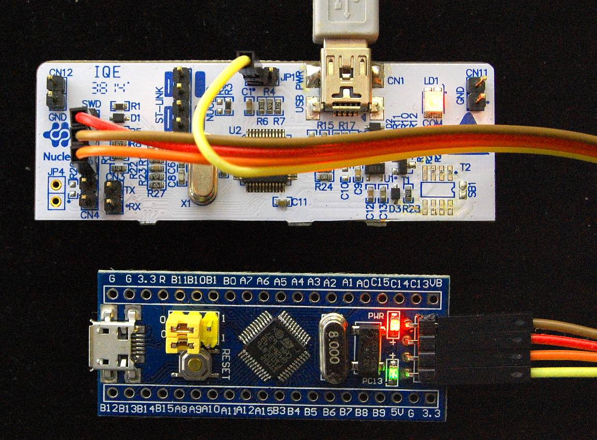
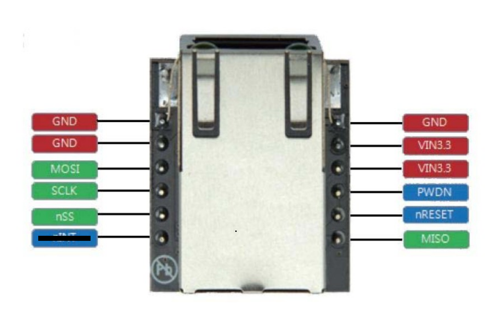
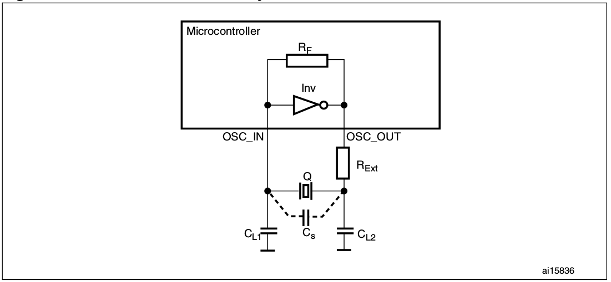

Introduction
Ce site internet contient la documentation du Club Robot de l'INSA Toulouse pour les parties électronique et informatique du robot.
Ce livre est rédigé avec md-book.
Le but de ce livre est de te guider pour l'installation des différents outils permettant de programmer au Club Robot.
Ce livre ne documentera pas le code du club, mais peut documenter les différents fichiers d'un projet. Il est là pour servir de référence en cas de problème et de questions vis à vis d'un fichier.
Sa lecture est préliminaire à la formation organisée en début d'année, et son but est de nous faire gagner du temps en vous faisant installer à la maison les outils de dévellopement.
Enfin, son écriture a commencé après Chocobot à la coupe de france de 2018 (Robot Cities).
Pour la suite du "livre", si on s'est occupé de t'installer linux sur ton ordinateur ou si tu as une version de Ubuntu récente (>16.04) tu peux te considérer comme un utilisateur "standard" et tu n'as pas besoin de suivre les sections pour les power user.
Si jamais tu trouves des fautes d'orthographes, des erreurs, des remarques ou toutes autres formes de contribution à faire n'hésite surtout pas. Les sources de ce livre sont sur ce repertoire github, et il n'y a pas besoin de git pour y apporter des modifications simples : l'interface en ligne de github te permet de modifier les fichiers textes et de créer ton premier commit en quelques secondes! Il faut juste penser à demander aux membres du club d'ajouter ton compte dans la liste des utilisateurs autorisés.
Enfin, la phrase la plus importante en informatique à garder en tête durant toute ta formation :
Le mieux est l'ennemi du bien, surtout au club robot.
Un illustre anonyme

Outils Communs
Cette section répertorie les principaux outils utilisés au Club Robot.
Ce tableau t'aidera à savoir quelles pages t'intéressent en fonction de ton pôle de prédilection :
| git | CLion | CMake | Kicad | |
|---|---|---|---|---|
| Informatique | ✔️ | ✔️ | ✔️ | |
| Electronique software | ✔️ | ✔️ | ||
| Electronique hardware | ✔️ | ✔️ | ||
| Mécanique | ✔️ |
Dual Boot avec Linux
Tu as probablement un ordinateur sous Windows. Cependant, développer sous ce système d'exploitation est compliqué donc on utilise des systèmes Linux au club.
Tu as différentes manières d'utiliser Linux :
- Utiliser VirtualBox, une machine virtuelle pour exécuter Linux à l'intérieur de Windows (cependant, ton ordinateur va devoir exécuter deux systèmes d'exploitation en même temps donc il y aura des pertes de performance)
- Installer un dual boot, c'est à dire qu'au démarrage de ton ordinateur, soit Windows soit Linux va être lancé, donc les performances de chaque OS vont être maximales mais ton disque dur aura une partie attribuée à Windows et une autre à Linux.
Ce tuto est là pour t'expliquer comment installer un environnement sympa sous Linux.
Préliminaires sous Windows
Avant tout, il faut faire quelques réglages sous Windows pour permettre l'installation d'un nouveau système d'expoitation (Windows n'aime pas trop partager un ordinateur). Pense aussi à sauvegarder toutes les données importantes ailleurs que sur ton PC. Je n'ai jamais eu de problème avec une installation de Linux, mais comme d'habitude, quand on joue avec les partitions de son disque dur, on prend des précautions (panne de courant/batterie pendant une étape critique par exemple).
- Désactiver la mise en veille prolongée : par défaut, Windows ne s'éteint pas quand on le lui dit mais rentre en veille prolongée. Ceci est totalement inutile depuis qu'il y a des disques SSD, et ça empèche de démarrer sous un autre OS
- ouvrir un terminal avec les droits administrateur (clic droit sur le logo windows, shell)
- entrer la commande
powercfg -h off
- Partitionner le disque dur : afin d'éviter tout problème de partionnement à cause de la fragmentation Windows, il vaut mieux utiliser directement les outils de Windows :
- appuyer sur
Windows + R - saisir
diskmgmt.msc - clic droit sur le volume à partitionner (Disque 0) et sélectionner
Réduire le volume - choisir la taille de la partition désirée (Ubuntu demande 15Go minimum et recommande 25Go ; si tu as de la place tu peux faire une nouvelle partition à
40Gopour être large)
- appuyer sur
Ton disque dur a maintenant un espace inutilisé, il est temps de l'utiliser !
Choix du système Linux
Il te faut à présent choisir quel nouveau système d'exploitation utiliser. Linux est un univers très vaste, que l'on peut sommairement classer :
{kind=link}
- les systèmes basés sur les fichiers
.rpm- CentOS
- Fedora
- openSUSE
- les systèmes dérivant de
Debian- Ubuntu
- Kali Linux
- les systèmes basés sur le packet manager
pacman- Arch Linux
- Manjaro
Tu peux demander des conseils aux membres si tu ne sais pas quel OS prendre, ils pourront même t'en faire essayer plusieurs !
Ubuntu 18.04
Si tu n'as aucune idée de quel système choisir, je te conseille Ubuntu 18, un système communautaire LTS (Long Term Supported) qui est très simple à prendre en main et pour laquelle les nombreux forums répondent à toutes tes questions.
Pour l'installer, il te suffit de télécharger l'ISO et la mettre sur une clef USB.
! Attention ! Sauvegarde toutes les données sur ta clé USB avant de continuer ! Ta clef sera effacée par la suite (mais tu pourras la réinitialiser après avoir installé Linux, puis remettre tes données dessus ensuite).
Par "mettre sur une clef USB", on entend "flasher une image disque", mais c'est un terme barbare. Ici il ne te sera expliqué que comment faire. Le moyen le plus simple est d'utiliser Etcher. C'est un logiciel open source et compatible sur Windows, Mac et Linux. Sa grande qualité est d'être tres simple à utiliser.
Une fois installé et lancé, il n'y a littéralement que quatre clics à faire :
- "Select Image" t'invite a choisir l'ISO que tu as déjà téléchargé.
- "Select Drive" te demande de choisir le disque (clef USB dans notre cas) à flasher. C'est a dire qu'il sera formatté ( ! toutes les données dessus seront perdues !) puis que l'ISO y sera correctement installé. Cette étape requiert de savoir ce que l'on fait : il faut être absolument certain que le nom et la capacité du disque choisi correspondent à ta clef USB, et surtout pas à ton disque dur. Normalement Etcher est bien fait, et refuse de continuer si choisit un disque à ne pas toucher, mais il vaut mieux être trop prudent.
- "Flash!" lance l'opération et raconte ce qu'il fait à ta clef au fur et à mesure.
Si tout c'est bien passé, ta "Live-USB" est prête à l'emploi. La suite dépend de ton ordinateur et de la distribution que tu veux installer.
Manjaro Linux
Pour les utilisateurs un peu plus confirmés, je peux aussi conseiller Manjaro, qui se base sur Arch Linux. La configuration de ce système est totalement personnalisable et il existe de nombreuses variantes graphiques, en fonction de si tu préfères des systèmes avec un bureau ou la gestion de fenêtres comme Manjaro i3.
Là encore, tu peux télécharger l'ISO qui te convient puis le mettre sur une clef USB.
Installation sur ton ordinateur d'un dual boot
À présent que tu es muni.e d'une clef bootable, tu peux la brancher sur ton ordinateur, appuyer sur la touche pour aller dans le BIOS (ça dépend du constructeur mais tu as de bonnes chances d'y parvenir en spammant Échap, F2, F9 ou F11) puis modifier quelques paramètres :
- Désactive le
UEFI Secure Boot - Désactive le
Fast Start-Up - Change l'ordre de priorité pour booter afin de lancer ta clef USB en première
Si tu as le moindre problème je te conseille d'aller voir un membre du club, mais si ton écran affiche des choses en relation avec Linux et non pas l'écran de démarrage de Windows c'est gagné !
Tu peux choisir de tester l'OS ou alors de l'installer directement. L'interface devrait être assez explicite ; il va juste te falloir réaliser une dernière manip sur la page des disques.
Pour être sûr.e que tout se passe bien, choisis Something else lorsqu'on te demande où installer le système Linux. Ensuite, dans l'espace libre, tu peux attribuer 2Go à une mémoire de type swap (ce qui permets de soulager la RAM si tu lances des applications qui consomment trop). Tu peux attribuer le reste de l'espace libre pour Linux avec type: ext4 et mount point: / en formatant l'espace pour éviter tout problème ultérieur.
Finalise l'installation et redémarre ; si tu arrives sur une interface pour choisir entre Linux et Windows (c'est le Grub 2) tout marche comme il faut !!
Setup de Linux
La première chose à faire est de mettre à jour ton système.
- ArchLinux :
sudo pacman -Suy - Debian :
sudo apt update && sudo apt upgrade
Installation basique
Installons les paquets de base nécéssaire pour faire fonctionner les différents outils du club. Ouvre un terminal, et entres :
sudo apt install git curl wget ntfs-3g python3 gcc gdb vim nano cmake
Les paquets installés sont les suivants :
- git --> un gestinnaire de version et de code
- curl --> pour télécharger des objets en ligne de commandes
- wget --> en gros, idem que curl
- python3 --> pour executer les scripts python3
- gcc --> pour compiler du C/C++, toujours utile
- gdb --> pour debugger du C/C++, toujours très utile
- vim --> un éditeur de texte en ligne de commande, un peu compliqué mais complet (pour quitter: ESC > :q! > ENTER)
- nano --> un éditeur de texte plus simple
Installation avancée
Note : Cette partie est falcultative et non recommandée si c'est votre première installation de linux.
Ensuite, tu peux installer différents paquets sympatiques :
- Archlinux
sudo pacman -S ntfs-3g wget curl zsh thunderbird firefox rofi numlockx python-pip
sh -c "$(wget https://raw.githubusercontent.com/robbyrussell/oh-my-zsh/master/tools/install.sh -O -)"
cd /tmp
git clone https://github.com/meskarune/i3lock-fancy.git
cd i3lock-fancy
sudo make install
sudo wget https://cht.sh/:cht.sh -O /usr/local/bin/cht.sh
sudo chmod o+x /usr/local/bin/cht.sh
sudo pip install cheat
- Ubuntu
sudo apt-get install ntfs-3g wget curl zsh thunderbird firefox python-pip
sh -c "$(wget https://raw.githubusercontent.com/robbyrussell/oh-my-zsh/master/tools/install.sh -O -)"
sudo wget https://cht.sh/:cht.sh -O /usr/local/bin/cht.sh
sudo chmod o+x /usr/local/bin/cht.sh
Si tu as un disque / partition en commun entre Windows et Linux (pour partager tes documents et musiques par exemple), tu as la possibilité de monter ce disque à chaque lancement de Linux pour y avoir accès facilement :
sudo blkidte donne des informations sur tous les disques- copie le
UUIDde la partition en commun - rajoute la ligne
UUID=<ton_UUID_copié> /media/commun ntfs-3g auto,user,exec,rw 0 0à la fin du fichier/etc/fstab(il faut ouvrir un éditeur de texte ensudo) - au prochain redémarrage, ton disque commun sera accessible dans
/media/commun/ - tu pourras faire des liens symboliques pour accéder à tes dossiers facilement, par exemple pour tes documents :
cd ~
rm -rf Documents
ln -s /media/commun/Documents .
Enfin, si tu veux avoir des exemples de fichiers de configuration pour vim, git, zsh ou encore i3 sous Manjaro-i3, tu peux aller voir ce dépôt GitHub.
Git
Cette page s'adresse à tous les membres du Club.
On utilise un gestionnaire de versions pour manager l'ensemble du code : git.
Ce choix a de très nombreux avantages :
- L'évolution de tout le code est sauvegardée donc on peut rappeler une version antérieure d'un fichier à tout moment
- Si on perd des fichiers ou que l'on se trompe, on peut facilement revenir à un état stable
gitpermets de collaborer sur un même code, c'est à dire que plusieurs développeurs peuvent participer au code et le logiciel s'occupe de rassembler l'ensemble des modifications- On peut profiter de tous ces avantages avec très peu de travail supplémentaire
Installation de git
Afin de bénéficier de tous les avantages de git, il n'y a rien de plus simple : il suffit d'exécuter la commande suivante.
sudo apt update
sudo apt install git
Astuce : pour vérifier que l'installation d'une application a bien marché, tu peux appeler la commande which qui te retourne le chemin vers l'exécutable, ou encore l'exécuter avec le flag --version :
$ which git
/usr/bin/git
$ git version
git version 2.11.0
Apprendre à utiliser cet outil
Apprendre en ligne
git est un logiciel extrêmement pratique une fois qu'on l'a pris en main, alors voici ton premier travail à la maison : apprendre visuellement git. Le tutoriel est multilangue, et si tu préfères suivre un tuto en français en voici un d'OpenClassrooms.
Vu qu'il sait faire de très nombreuses choses, ce n'est bien sûr pas la peine d'apprendre toutes ses commandes par coeur. Voici des Cheat Sheets qui vont te faire gagner du temps :
B.A.-BA des commandes
Si tu as besoin d'aide pour utiliser git, les forums de StackOverflow te permettent de répondre à tes questions les plus complexes.
Ensuite, voici une documentation d'API des différentes fonctions.
En général cependant, tu vas devoir utiliser le même socle de commandes et le but de ce paragraphe est de te lister le template de commandes à utiliser ; je t'invite néanmoins à aller lire la documentation de chacune de ces commandes pour voir à quel point elles peuvent être puissantes.
-
Avant de commencer à travailler, il faut récupérer le travail réaliser par les autres développeurs. Si tu as déjà des
commits en local, tu peux spécifier le flag--rebasepour avoir une architecture linéaire ; sinongitvamerger la branche locale et celle distante même pour des intégrations triviales.git pull [--rebase]
-
À présent, à toi de faire des modifications pour contribuer au dépôt. Une fois que tu as fini et que tu veux créer un paquet qui contient ta nouveauté, il faut demander à
gitde rajouter toutes tes modifications intéressantes. Tu peux également connaître les modfications que tu as faites soit fichier par fichier, soit ligne par ligne. Bien sûr, tu peux restreindre la recherche à un document ou à des fichiers en particulier en les rajoutant à la fin.git statuste liste tous les fichiers qui ont été modifiés / supprimés / créésgit diffte montre toutes les additions et délétions dans le code pour l'ensemble de ces fichiers
-
Il est temps de choisir les modifications que tu veux sauvegarder dans l'arborescence de
git. Il y a plusieurs moyens d'y arriver en utilisantgit addetgit reset:git add *te permets d'ajouter TOUTES les modifications, il ne faut donc pas l'utiliser si tu travailles sur plusieurs projets en même tempsgit add <file 1> [file 2] [...]ajoute les modifications de chaque fichier / dossier dans leur ensemble. Si tu crées un nouveau fichier, il faut utiliser cette méthode pour l'ajouter et non pas la suivante.git add -ppermets de mixeraddetdiff; il s'agit d'une méthode particulièrement efficace si tu as besoin de sauvegarder seulement quelques lignes et non pas l'ensemble des modifications sur un fichier. Une interface s'ouvre et tu peux choisir d'accepter avecyou de refuser les modifications avecn; d'autres commandes sont possibles notammentqpour quitter.git resette permets d'annuler l'insertion des modifications dans la sauvegarde degit(mais il ne reset pas les modifications du fichier, rassure-toi). Tu peux également lui donner l'argument-ppour accéder à l'interface intéractive.
-
Tu peux vérifier que tu as ajouter les bonnes modifications en appelant de nouveau
git statuspour voir les fichiersgit diff --stagedpour voir les modifications dans le code
-
Il est enfin temps de créer le 'paquet' de modifications, appelé
commit. Afin de pouvoir s'y retrouver plus facilement, lescommits ont chacun un numéro unique (appelé hash ; il a cette tête :44bf09d0a2c36585aed1c34ba2e5d958a9379718et est généré automatiquement) et également un message que tu dois choisir pour expliquer ce à quoi il sert. C'est très intéressant de créer uncommitpar fonctionnalité, et donc qui modifie éventuellement plusieurs fichiers, afin de pouvoir relire l'historique ensuite. Pense donc à en réaliser plusieurs au cours de ton travail, tu pourras facilement revenir à des versions précédentes ce qui est très bénéfique !git commit -m <message>git commit --amendte permets de juste rajouter des modifications au dernier commit pour ne faire qu'un seul paquet avec les anciennes et nouvelles modifs.
-
Maintenant que tu as créé plusieurs
commits, tu peux vérifier que tout s'est bien passé en faisant appel à l'historique. Tu pourras y observer le numéro de chaque commit, leur auteur, leur date de création ainsi que leur message d'accompagnement.git log
-
Enfin, les modifications que tu viens de faire ont pour but d'être partagées aux autres développeurs et donc envoyés sur le dépôt distant de github.com. Normalement, si tu as bien suivi les étapes de clonage présentées un peu plus bas, tout devrait être déjà configuré pour n'avoir qu'à taper ceci :
git push -u origin <branch>la première fois pour demander à envoyer lescommits sur le fluxorigin, c'est à dire github, correspondant à la branche actuelle (par exemplemaster)git pushles fois suivantes ; tout va marcher ensuite à condition d'avoir une connexion internet :wink:
Je n'ai pas parlé d'un certain nombre de commandes car tu ne devrais pas les utiliser quotidiennement. Voici une liste de fonctione néanmoins intéressantes dont tu peux aller voir la documentation :
git branch- notion que je n'ai que très peu abordée,gittravaille avec des branches pour faciliter le travail sur plusieurs projets en parallèlegit checkout- permets de se ballader d'une branche à une autre branche ou à un commit en particuliergit reset- idél pour enlever les modifs d'ungit addet pour supprimer descommits foireux présents localementgit revert- applique les modifications complémentaires à un commit, idéal pour annuler un commit foireux déjà envoyé sur le serveurgit merge- permets à deux branches de fusionner ; fonctionnalité sympa pour travailler indépendamment sur un projet puis l'intégrer dans la branche principale une fois qu'il est fonctionnelgit rebase- permets de copier des commits pour avoir une arborescence plus linéairegit rebase -i- fenêtre intéractive pour réorganiser les commits comme tu veuxcherry-pick- copie un ensemble de commits à l'endroit actuel, ce qui simplifie l'utilisation d'ungit rebasegit stash- mémorise des modifications dans un endroit à part ; ça te permets de sauvegarder un travail qui ne compile pas par exemple. Options intéressantes :drop,pop,list,show,save <NAME>,-p.git tag- marque permannante sur un commit pour y accéder n'importe quand (à sa création, il faut appelergit push --follow-tagspour le partager avec tout le monde).git fetch- télécharge les infos sur le dépôt distant ; contrairement àgit pull, aucunmergen'est réalisé entre le dépôt localement et celui à distance, donc cette commande est très peu utilisée
Création d'un compte GitHub
Afin de partager notre travail, on utilise les serveurs de GitHub. Il s'agit d'un service web qui offre une interface graphique à git tout en permettant de récupérer les projets du Club n'importe où.
Il faut donc que tu te crées un compte sur le site : github.com.
Une fois que c'est fait, demande à un membre du Club de t'ajouter dans l'organisation ClubRobotINSAT.
Configuration de git
Il faut configurer ton ordinateur pour qu'il te connaisse, voici comment :
- Ton nom associé aux
commitgit config --global user.name "[ton nom]"
- Ton adresse mail associée aux
commit(de préférence celle utilisée lors de la création de ton compte GitHub)git config --global user.email "[ton adresse mail]"
- Colorisation des lignes (pas obligatoire mais pratique)
git config --global color.ui auto
2 méthodes pour cloner les dépôts
Méthode simple avec HTTPS
Le clonage en HTTPS est le plus simple et le plus couramment utilisé. Il ne demande que le lien vers le dépôt pour le cloner, et lorsqu'une authentification est requise (clone d'un dépôt privé, push, ...) il faut entrer son identifiant du serveur git (dans notre cas, github.com) ainsi que son mot de passe.
Voici comment récupérer le code de la partie info :
git clone https://<ton_login_github>@github.com/ClubRobotInsat/info.git
cd info
Méthode alternative avec SSH
github.com propose une autre fonctionnalité accéder au serveur par SSH. La mise en place de cette méthode est un peu plus longue que le simple protocole HTTPS, mais ça te permettra de t'affranchir de devoir entrer ton mot de passe et ton identifiant à chaque intéraction avec le serveur.
Je te laisse suivre les instructions détaillées pour ajouter la clef SSH sur github.
Enfin, voici comment récupérer un dépôt :
git clone git@github.com:ClubRobotInsat/info.git
cd info
IDE
Cette page s'adresse à la fois aux infos et aux élecs soft.
Comme tu as pu le constater, l'arborescence du code est assez complexe et il y a beaucoup de fichiers. Pour coder facilement, il existe des outils qui nous facilitent la vie : les environnements de dévelopement, ou encore des IDE.
Dans ce guide, nous installerons un IDE pour le langage C++ qui est le langage utilisé pour la partie informatique du robot. Notre choix se porte sur CLion qui est développé par JetBrains. Il s'agit d'un IDE à la fois flexible, simple d'utilisation, multiplateforme et qui a la particularité d'utiliser nativement CMake, le système de build utilisé par notre code.
Cet IDE est normalement payant, mais une version d'éducation (licence valide 1 an, renouvelable tant que l'on est étudiant) est disponible.
Téléchargement de l'IDE
Pour commencer, il faut :
- Se rendre sur la page de CLion et télécharger la dernière version, ou télécharger la Toolbox App si tu veux utiliser des IDEs pour d'autres langages
- Pendant le téléchargement, aller sur la page de jetbrains.com pour demander une licence éducation. L'adresse mail à fournir est celle de l'INSA (<nom>@etud.insa-toulouse.fr) pour que JetBrains accepte de délivrer la licence.
- Va voir ta boîte mail, un message contenant un lien de confirmation est arrivé : confirme ton adresse mail
- Tu reçois enfin un autre mail avec les infos de la licence, qu'il faudra saisir dans CLion
Lancement
Une fois le téléchargement terminé, il ne reste plus qu'à configurer ton ordinateur pour exécuter l'IDE :
- Il faut extraire l'archive téléchargée sur le site de CLion et copier le dossier
<clion-version>dans/opt/clion:cd ~/Downloads tar -xvf <nom de l'archive d'installation> sudo cp <nom du dossier extrait> /opt/clion -R - On renomme le script de lancement
clion.shenclionparce que c'est plus joli (selon mes goûts, j'aime aussi le orange si jamais).sudo mv /opt/clion/bin/clion.sh /opt/clion/bin/clion - Il faut maintenant ajouter le script de lancement de Clion à ta variable d'environnement
$PATH:
Leecho "export PATH=/opt/clion/bin:$PATH" >> ~/.bashrcPATHest une variable d'environnement qui contient une suite de chemins séparés par des deux points:. La ligne ci-dessus concatène lors de l'ouverture d'un terminal bash à la variablePATHle chemin de lancement de CLion. - Tu peux maintenant ouvrir un terminal et taper :
Ou, si jamais tu n'a pas suivi l'étape de renommage :clionclion.sh
Pour les utilisateurs d'un Ubuntu standard : Lorsque CLion est en cours d'exécution, son icône est affiché dans la barre des tâches à gauche. Pour le lancer plus rapidement, il te suffit de faire un click droit sur l'icône -> 'Lock to Launcher'
Si jamais l'IDE se lance, tu viens d'installer avec succès CLion ! Sinon je t'encourage à venir montrer le message d'erreur aux gens du club.
Informatique

Mise en place
Dans cette section, nous allons installer pas à pas tous les outils pour pouvoir développer du code dans le pôle informatique du Club Robot.
IDE
Normalement, tu as déjà suivi les instructions de la section Outils Communs - IDE, tu as donc l'IDE CLion déjà fonctionnel.
Si ce n'est pas le cas, reviens un peu en arrière et installe CLion !
Configuration spécifiques au Club Robot
Il ne reste plus qu'une étape et la configuration de ton IDE sera finalisée pour la partie info.
Dans le menu File -> Settings, dérouler l'item Build, Execution, Deployment et sélectionner CMake. Il faut ensuite remplir certains champs :
- dans
CMake options, mettre le texte-DDEBUG=on -DBITS=64: on spécifie àCMakedes flags supplémentaires qui sont utilisés par le projet - dans
Generation path, mettre le textebuild - dans
Build options, mettre le texte-j 4: on compile avec 4 coeurs (ou 8 si ton processeur en a 8)
Enfin, pour pouvoir tester les IA via la liaison série (RS232) en utilisant CLion, et sans nécessiter les droits root, il faut ajouter ton utilisateur au groupe ayant accès à la liaison série dialout :
sudo usermod -a -G dialout <NOM_UTILISATEUR>
Répertoire de travail
On utilise git pour gérer plus efficacement le code. Si le nom de ce logiciel ne te dis rien, je te conseille de revenir un peu en arrière pour aller lire cette page.
Clonage du dépôt
Si ce n'est pas déjà fait, je te conseille de te créer un dossier spécifique à tout le Club Robot, par exemple comme ceci :
mkdir -p ~/ClubRobot
cd ~/ClubRobot
Ensuite, on a besoin de deux dossiers en informatique, un premier qui contient tout le code info et un second qui permets de créer des tables de simulation facilement.
En t'inspirant de ce que tu as appris pour cloner des dépôts, je t'invite à récupérer les deux dossiers :
-
git clone https://github.com/ClubRobotInsat/pytable.git git clone https://github.com/ClubRobotInsat/info.git cd info -
git clone git@github.com:ClubRobotInsat/pytable.git git clone git@github.com:ClubRobotInsat/info.git cd info
Félicitations, te voilà possesseur de tout le savoir informatique du Club !
Fonctionnement des branches
Comme tu peux le voir sur la page GitHub, on utilise plusieurs branches en même temps. Cette fonctionnalité de git nous permets de travailler en parallèle sur plusieurs projets.
La branche master est protégée : on n'y mets que des versions totalement fonctionnelles (cette branche ne nous sert par beaucoup).
Tout le code que nous écrivons passe par la branche develop donc je t'invite dès maintenant à te rendre dessus :
git checkout develop
git pull
Il s'agit de notre branche principale de développement. Afin d'avoir une architecture propre pour s'y retrouver, on utilise des branches pour chaque fonctionnalité en cours de développement. L'objectif est de partir de develop qui est propre, basculer sur une branche temporaire pour développer la fonctionnalité puis merge ce nouveau code lorsqu'il est fonctionnel dans develop.
Prenons l'exemple d'un développement sur le simulateur :
git checkout develop # On se mets sur la branche mère `develop`
git checkout -b dev-simu # Création d'une nouvelle branche spécialement pour le simulateur à partir de `develop`
# MAKE YOUR CODE
git add -p # Ajout des fonctionnalités
git commit # Autant de commits que tu veux jusqu'à ce que ça marche
Une fois que tu es satisfait de ton code, tu as deux possibilités :
git checkout develop && git merge dev-simupour intégrer directement le code dans la branche principale ; il faut que tu sois sur de toi :wink:- Depuis la page Pull requests, crée une nouvelle requête pour
mergeta nouvelle branchedev-simudansdevelop. Ça permets d'avoir une review d'autres personnes sur ton travail, ce qui ne fait jamais de mal. Le retour des autres membres te permets de perfectionner ton code, te faire penser à certaines choses qui n'apparaissent pas dans les tests unitaires par exemple ou encode de valider ton travail pour l'intégrer dans le code. Bien évidemment, cette manière de faire est très fortement recommandée !
Compilation
Dans cette section, nous allons t'installer tous les outils qui te permettront de compiler le projet informatique.
Logiciels nécessaires
On utilise les outils suivants :
git: gestionnaire de versions pour le code, que tu as déjà dû installercmake: grâce aux différentsCMakeLists.txt, le projet se compile très facilement en invoquantcmakepuismake(nous verrons plus tard comment utiliser cet outil)clang-format: cet utilitaire permets d'homogéniser tout le code pour qu'il respecte la même norme d'écriturelibbox2d-dev,libirrlicht1.8: ces librairies permettent d'utiliser le simulateur du club
Heureusement, un script s'occupe d'installer tous ces outils et d'autres encore pour assurer la compilation sans erreur du projet. Voici comment l'appeler (en considérant que vous êtes dans le dossier info):
scripts/install.sh tools
Applications recommandées
Formattage du code
Un hook permets de lancer un script à chaque commit pour formater le code comme il faut :
scripts/install.sh format
gcc recent en tant que compilateur
Cette section ne s'applique que si tu as eu un problème lors de l'exécution du script d'installation, pour gcc-7 et g++-7.
Pour pouvoir compiler l'ensemble du code, il te faut un compilateur supportant C++ 17, donc au minimum g++-7.
version 7
Si tu es sur un ancien Ubuntu (avant 17.04) :
sudo add-apt-repository ppa:ubuntu-toolchain-r/test
Sinon :
sudo add-apt-repository ppa:jonathonf/gcc-7.1
Puis :
sudo apt-get update
sudo apt-get install gcc-7 g++-7
sudo update-alternatives --install /usr/bin/gcc gcc /usr/bin/gcc-7 70 --slave /usr/bin/g++ g++ /usr/bin/g++-7
Si tu es sur Ubuntu 18, tu peux même installer g++-8 :
sudo apt-get update
sudo apt-get install gcc-8 g++-8
sudo update-alternatives --install /usr/bin/gcc gcc /usr/bin/gcc-8 80 --slave /usr/bin/g++ g++ /usr/bin/g++-8
Cross-compilation
Pour pouvoir compiler du code qui sera compris par la raspberry (et pas que par ton ordinateur), tu vas avoir besoin d'autres versions de gcc. Pour les installer, tape simplement :
sudo apt install g++-8-arm-linux-gnueabihf gcc-8-arm-linux-gnueabihf
Autres installations
Lib Wiimote
Si tu veux pouvoir contrôler le robot à l'aide d'une WiiMote, il faut installer la librairie WiiC nécessaire aux démos :
scripts/install.sh wii
Clang en tant que compilateur
Si tu veux utiliser un autre compilateur par défaut (clang), voici les commandes à utiliser :
sudo apt-get install clang-3.8
sudo update-alternatives --install /usr/bin/c++ c++ /usr/bin/clang++-3.8 100
Cependant, tous les membres actuels utilisent gcc par défaut.
Petrilab
Ce logiciel permets d'éditer des réseaux de Petri. Il a été développé en interne par rems4e et il nous permets de créer graphiquement des stratégies.
Son installation actuelle est vouée à évoluer prochainement pour le plus avoir les fichiers binaires directement dans le dépôt git, et les systèmes d'exploitation pris en charge pour le moment sont les suivants :
- Ubuntu 14.04
Trusty - Ubuntu 17.04
Zesty - Ubuntu 18.04
Bionic
Pour avoir des informations sur ton OS, utilise la commande lsb_release --all ; s'il correspond à ceux disponibles, alors tu peux simplement appeler le script d'installation :
scripts/install.sh petri
Problèmes de compilation connus
- Problème de clock skew ? Il suffit de lancer
find -exec touch \{\} \;dans le dossierinfo. Attention, cela peut être un petit peu long. - Problème lors d'un appel à
cmake? Commence par clean tous les fichiers générés :Tools > CMake > Reset Cache and Reload Project.
Test de l'environnement de travail
A présent que ton ordinateur est totalement configuré, il est temps de compiler le code !
L'interface de CLion peut paraître compliquée de prime abord, c'est pourquoi il ne faut pas hésiter à demander de l'aide à un membre du Club.
Une des fonctionnalités les plus utilisées est celle de la compilation intégrée. Pour cela, en haut à droite de la fenêtre, choisis la target BuildAll. Comme tu peux le voir, de nombreuses applications peuvent être compilées, et on veut actuellement s'assurer que tout compile chez toi. Ensuite, appuie sur le bouton à gauche de la liste déroulante pour compiler. Attention, ça va prendre un peu de temps.

Si il n'y a pas de messages d'erreur, BRAVO tu viens d'installer avec succès tout l'environnement de travail !
Sinon, je te conseille de te rapprocher d'un membre du pôle informatique.
Outils informatiques
Si ce n'est pas déjà fait, je te conseille dans un premier temps d'installer git et CLion en allant dans la section des outils communs.
Le code informatique a une certaine taille (700 fichiers pour 200.000 lignes de code) et l'ensemble des fichiers sont répartis dans une arborescence relativement dense.
De plus, n'oublie pas cette devise :
Un bon informaticien est un informaticien fénéant.
Ainsi, on proscrit au maximum les copiés/collés donc certaines parties de code sont empaquetés dans des librairies et sont réutilisées dans de très nombreux endroits du projet.
Enfin, il faut toujours se rappeler qu'un ordinateur est bête et qu'il n'exécute que ce qu'on lui dit de faire, donc pour compiler ton Intelligence Artificielle révolutionnaire qui va nous envoyer directement en finale, il ne suffit pas d'appeler le compilateur avec g++ IA.cpp mais il faut donner les liens vers les librairies qui s'occupent des cartes électroniques, celles vers les outils mathématiques, spécifier quels répertoires sont utilisés pour compiler, éventuellement créer les librairies dynamiques associées et bien d'autres choses encore.
Afin d'éviter de t'infliger de telles soufrances, on utilise un utilitaire qui permets de gérer efficacement un tel projet grâce à cmake. On va ensuite détailler les librairies développées en interne au club pour faciliter la programmation.
CMake
cmake est un utilitaire open-source et multi-plateformes qui permet indépendemment du compilateur de générer des fichiers utilisables pour la compilation. De plus, l'IDE CLion utilise nativement cmake, ce qui veut dire qu'il va te faire gagner énormément de temps à chaque fois que tu travailleras avec un projet configuré avec cmake.
Son installation est très simple, il te suffit d'exécuter
sudo apt-get install cmake
Explications du fonctionnement
cmake est à utiliser avec le programme make (tu n'as pas à l'installer en plus, il est déjà présent sur ton ordinateur).
À l'origine, les projets en C étaient compilés avec make grâce à des fichiers de configuration, des Makefile. Pour te donner une idée de ce à quoi ils ressemblent, voici un exemple (qui n'a rien à voir avec le Club Robot) :
CC := gcc
LD := gcc
vpath %.c $(SRC_DIR)
define make-goal
$1/%.o: %.c
$(CC) -std=gnu99 -Wall -m32 -g -I $(INCLUDES) -c $$< -o $$@
endef
.PHONY: all checkdirs clean
all: checkdirs build/client
build/client: $(OBJ_CLI)
$(LD) -m32 $^ -o $@ -lm -lpthread -g
checkdirs: $(BUILD_DIR)
$(BUILD_DIR):
@mkdir -p $@
clean:
@rm -rf $(BUILD_DIR)
distclean:
@rm -rf $(BUILD_DIR)
@-rm -f *.tar.gz || true
$(foreach bdir,$(BUILD_DIR),$(eval $(call make-goal,$(bdir))))
Si tu es en train de te dire que c'est illisible, c'est normal et tu n'as pas à apprendre cette syntaxe rassure-toi.
En effet, l'objectif de cmake et de rajouter une surcouche à l'étape de compilation en permettant au programmeur d'écrire dans un anglais plus lisible (c'est à dire qu'il rajoute un couche d'abstraction).
Ainsi, tu vas travailler avec des fichiers de configuration nommés CMakeLists.txt. Voici un petit exemple du fichier qui gère tout le code du robot principal :
set(ROBOT_PRINC_SOURCE
../Commun/Strategie.cpp
librobot/Robot.cpp
librobot/MecaManager.cpp
librobot/Strategie.cpp
#librobot/Ascenseur.cpp
petri/Deplacement.cpp
petri/Servo.cpp
petri/Moteur.cpp
petri/Utils.cpp
petri/PetriCommon.cpp
librobot/StrategyGenerator/MagicStrategy.cpp)
add_library(robotPrincipal STATIC ${ROBOT_PRINC_SOURCE})
add_library(robotPrincipalInterfaceElec STATIC ${ROBOT_PRINC_SOURCE})
target_link_libraries(robotPrincipal Cartes Robot Strategie)
target_link_libraries(robotPrincipalInterfaceElec Robot_Interfacer_Elec Cartes Strategie)
add_executable(debug_calibration_depla debug/CalibrationDepla.cpp)
target_compile_options(debug_calibration_depla PUBLIC -Wno-deprecated)
target_link_libraries(debug_calibration_depla robotPrincipal)
include_directories(/usr/local/include/wiic/)
set(wiimote_sources IA/IAWiimote.cpp wiimote/Wiimote.cpp)
add_executable(IAWiimote ${wiimote_sources})
include_directories(/usr/local/include/wiic/)
add_executable(IAPrincipal IA/IAPrincipal.cpp)
if (RASPI)
message(STATUS "Compiling IAPrincipal for the raspi")
link_directories(/usr/arm-linux-gnueabihf/lib)
target_link_libraries(IAPrincipal robotPrincipal PetriRuntime dl)
else()
target_link_libraries(IAWiimote robotPrincipal wiicpp)
target_link_libraries(IAPrincipal robotPrincipal)
endif()
add_executable(IATestDeplacement IA/IATestDeplacement.cpp)
target_link_libraries(IATestDeplacement robotPrincipal)
add_executable(IATestMeca IA/IATestMeca.cpp)
target_link_libraries(IATestMeca robotPrincipal)
Ensuite, une fois ces fichiers bien configurés, il te suffit d'aller dans la racine du dossier et de taper les commandes suivantes :
mkdir -p build
cd build
cmake ..
make all
Tout est automatisé ; dans un premier temps les Makefiles vont être générés puis la commande make va lire ces fichiers pour les compiler grâce à g++. À la fin du processus (la compilation peut prendre jusqu'à une dizaine de minutes en tout), tu auras les fichiers binaires dans le dossier /info/build prêts à être exécutés.
Cheatsheet
Ce paragraphe n'a bien sûr pas pour but d'être exhaustif, si tu as besoin de trouver des commandes spécifiques je te conseille d'aller voir vers le wiki.
CMakeLists.txt principal
Pour une meilleure lisibilité, les configurations sont réparties dans chaque dossier. Il y a un CMakeLists.txt principal qui fait des configurations globales, et qui appelle ensuite les CMakeLists des sous-dossiers pour compartimenter le simulateur du robot par exemple.
cmaks_minimum_required(VERSION 3.0)- certaines fonctionnalités decmakesont apparues dans les versions les plus récentes donc il faut toujours spécifier ce flagproject(root)- définission du nom global du projetoption(<NAME> "<comments>" [DEFAULT])- permets de donner des options pendant le lancement decmake. Par exemple, avec l'option(BITS "Build en 32 ou 64 bits" 64), on peut forcer la compilation en 32 bits avec l'appelcmake .. -DBITS=32add_definitions(<DEFINITION>)- spécifie des définitions pour la compilationadd_subdirectory(<PATH>)- appelle leCMakeListsd'un dossier enfant, par exemple celui du simulateurlink_directories(/usr/local/lib/)- permets d'utiliser des librairies déjà existantes (par exemple, celle de box2d pour la gestion du moteur physique)
Commandes les plus utilisées
- conditions :
Tests d'égalité :if(COLOR) set(CMAKE_COLOR_MAKEFILE ON) else() set(CMAKE_COLOR_MAKEFILE OFF) endif()${BITS} EQUAL 32,${CMAKE_CXX_COMPILER_ID} STREQUAL "^(Apple)?Clang$" - créer des variables :
set(<NAME> <VALUE); exemple :set(CMAKE_CXX_FLAGS "${CMAKE_CXX_FLAGS} -std=c++14");set(FILES_SOURCE src/file1.cpp src/file2.cpp) - librairies
- Créer une librairie :
add_library(<NAME> STATIC ${FILES_SOURCE}) - Lier une cible vers une librairie :
target_link_libraries(<TARGET> <Lib1> [Lib2] [...]) - Récupérer les fichiers d'une librairie externe :
find_package(<NAME>)(wiki)
- Créer une librairie :
- créer un nouvel exécutable :
add_executable(<NAME> <file1> [file2] [...])
PetriLab
Cette application a été créée en interne au Club Robot par Rémi SAUREL.
Au lieu d'écrire les IAs (Intelligences Artificielles) directement en ligne de code, ce qui peut rapidement être indigeste et surtout très peu maintenable pendant la coupe, le logiciel permets d'utiliser une interface graphique pour gérer toute la stratégie.
Ses avantages sont multiples :
- sans aucune notion en informatique, le logiciel est accessible à Monsieur Toulemonde
- il gère la parallélisation des tâches (avancer en ouvrant des pinces tout en allumant des moteurs et en affichant du texte à l'écran), ce qui demanderait beaucoup de travail en lignes de code
- on peut contrôler le robot depuis un mode
debug, et donc construire la stratégie en live
Le logiciel offre de nombreuses fonctionnalités, et cette page a pour but de t'expliquer comment l'utiliser.
Installation
Ce logiciel n'est pas en open-source et son installation n'est accessible qu'aux membres du Club Robot actuellement. De plus, il faut que tu aies Ubuntu 14.04, 17.04 ou 18.04.
Pour ce faire, après avoir cloner le dépôt info, je t'invite à écrire cette ligne de commande :
cd <dossier info>
scripts/install.sh petri
Le script d'installation va te demander un mot de passe ; à ce moment, demande à un membre du Club pour finaliser ton installation.
Prise en main du logiciel
TODO
Explications
La lecture de ce dossier va te permettre d'avoir un avant goût de l'architecture du code informatique. Je vais essayer de te donner les clefs pour comprendre comment te ballader dans l'arborescence et j'en profiterais pour entrer dans des détails plus techniques.
Bien entendu, ce tutoriel ne peut pas être exhaustif donc je te conseille d'aller voir le code directement et de lancer quelques exécutables pour comprendre leur fonctionnement, en utilisant les clefs de lecture que je vais te donner ici.
Bonne lecture !
Architecture de la racine du projet info
Si tu as déjà regardé des projets C++, tu as certainement dû te rendre compte d'une certaine similaritude entre les dossiers tout en haut de l'architecture. Cette 'normalisation' permets de passer d'un projet à un autre sans être perdu, et bien sûr une architecture bien structurée permets de gagner beaucoup de temps.
Je te propose un listing des items qui valent un coup d'oeil. Pour rappel, tu peux regarder le code durant ta lecture sur github et tu peux cliquer sur les liens de chaque fichier.
Fonctionnement de git
Afin de proposer tous ses services, git a besoin d'un certain nombre de fichiers de configuration. Voici ses principaux ainsi que leur rôle :
-
.git/- Ce dossier contient toutes les informations utiles àgitpour gérer le répertoire de travail. Je te conseille grandement de voir ce dossier comme une boîte noire et de ne pas y bidouiller des fichiers au risque de tout casser ! -
.gitignore- Cette fonctionnalité degitest très intéressante : elle permets de demander au logiciel d'ignorer les fichiers spécifiés. Par exemple, on demande àgitde ne pascommitles exécutables à chaque fois car ça n'a aucun intérêt et ça prendrait bien trop de place. -
.gitmodules- On travaille avec d'autres projets open source etgitpropose des sous-modules qui correspondent à des dossiers dont l'origine vient d'un autre projet. On peut donc utiliser des librairies développées par d'autres personnes sans devoir passer du temps nous-mêmes à les créer. Attention cependant, si tu veux rajouter un sous-module au projet, il vaut mieux utiliser la commandegit submodule add <lien> [chemin local]pour être sûr de bien tout configurer, puis il faut faire appel àgit submodule update --init --recursive --remotepour mettre à jour tous les submodules (mais cette commande est automatisée à chaque appel àcmake). -
.gitattributes- On demande explicitement àgitde considérer certains fichiers d'une certaine manière, par exemple tous les.petricomme des fichiers binaires (dans notre cas, ça évite de polluer l'affichage des commits sur github).
Fichiers
-
LICENSE- Ce fichier permets de spécifier la license utilisée pour la mise en open source du code ; on utilise la license MIT et je t'invite à te renseigner sur les licenses d'open source si le domaine de l'open source t'intéresse. -
README.md- Ce fichier est présent dans tous les répertoires hébergés sur github.com. Il permets de savoir ce qu'il y a dans le dépôt, donner des explications sur le code, faire de la documentation ou encore donner des références vers d'autres projets ; la rédaction de ce fichier est très libre. -
CMakeLists.txt- Il s'agit du fichier de configuration de cmake global à tout le projet. Si ce n'est déjà fait, je t'invite à aller lire la documentation sur CMake pour avoir une idée de ce que fait le logiciel. -
.clang-format- Tu ne vas pas forcément trouver ce fichier dans tous les projets, mais il est très pratique et permets d'appliquer des règles d'indentation à chaquecommitpour s'assurer une homogénisation du code entre les développeurs. -
doxyconfig- Doxygen est un utilitaire qui permets de créer de la documentation à partir du code en utilisant ce fichier de configuration. Malheureusement, la documentation actuelle ne permets pas d'utiliser cet outil et un gros travail est à réaliser pour avoir une documentation fiable. -
TODO.txt- Comme son nom l'indique, ce fichier permets de recenser les projets sur lesquels travailler pour l'année en cours.
Dossiers
-
src/- Ce dossier regroupe tout le code source du projet informatique. -
build/,build_arm/- Ces dossiers sont le résultat de la (cross-)compilation du code et ils contiennent les exécutables. Bien entendu, ils ne sont présents que localement etgitles ignore lors du processus de création descommits. -
third_parties/- Sous-modules (librairies) utilisés par le projet sous la forme de clones. Tout est automatisé dès lors que tu exécutescmake ..depuis un dossierbuild. -
doc/- Dossier qui reprends les documentation jusqu'à présent du projet. Ce dossier a pour vocation de disparaître pour laisser la place à la documentation que tu lis actuellement. -
scripts/- Ce dossier est très intéressant dans le sens où il propose de nombreux scripts qui vont te faciliter la vie. Si tu veux des exemples concrets de l'utilisation des commandes bash va vite lire ces scripts !-
build_arm.sh: Cross-compilation de[all|principal|wii|test]pour une archi ARM (la cible à compiler est à donner en paramètre). -
install.sh: Utilitaire pour t'aider à configurer ton ordinateur. Il est capable d'installer[all|tools|petri|format|wii|raspi](paramètre à donner en argument) ; tu as déjà utilisé ce script pour la mise en place du dépôt normalement. -
pre-commit: script copié et automatiquement appelé à chaque commit dès lors que tu lancesscripts/install.sh format, pour bien indenter ton code -
send_file_to_rpi.sh: se connecte au raspi et y envoie le fichier souhaité -
send_ia_principale.sh: cross-compile la target principale et envoi l'exécutable grâce au script précédent (script magique qui te mets bien 5 minutes avant un match !) -
ssh_into_rpi.sh: se connecte au raspi en SSH ; il faut préalablement configurer la connexion et brancher un câble RJ45 pour que ça marche -
simu_launcher.sh: Utilitaire pour exécuter automatiquement le simulateur
-
-
precompiled-libraries/- On utilise des librairies, notamment pour l'utilisation de la wii-mote. Pour plus de simplicité, on a cross-compilé ces librairies une fois pour toutes et on les stock ici afin de compiler plus facilement pour l'architecture ARM. -
cmake_modules/- Répertorie des fonctionscmakepour aller chercher facilement des librairies sur ton ordinateur (les scripts restent très peu lisibles mais ils sont fonctionnels).
Conclusion
J'espère que cette énumération te permets d'y voir un peu plus clair et que ça ne te donne pas envie d'oublier à jamais l'architecture info !
Les parties suivantes vont entrer dans les détails de ce qu'il y a dans le dossier src/, n'hésite pas à demander à un informaticien du club plus d'explications sur tout ce qu'il y a en 'annexe' du code source.
Vue globale du projet
En étant à la racine du dossier, je t'invite à exécuter ces deux commandes :
$ find src -type f | wc -l
678
$ find src -type f | xargs wc -l
186823 total
Il y a actuellement 678 fichiers source pour presque 200.000 lignes de code ; je te l'accorde c'est beaucoup.
Bien sûr, tous ces fichiers sont structurés et ce petit schéma peut te donner une idée des merveilles que tu peux trouver dans le dossier src/ :

Bien entendu, ce fichier est à mettre à jour en fonction des nouvelles fonctionnalités apportées, et si tu veux y participer il faut utiliser le logiciel dia.
sudo apt-get install dia
Comme tu peux t'en apercevoir, il y a trois parties principales :
commun- Tu peux y retrouver plein d'outils qui facilitent la programmation (manipulation d'unités physiques, constantes, manipulation de la communication, ...). Ce dossier est hyper important, mais je te conseille dans un premier temps d'utiliser les outils pour travailler sur le reste avant de te plonger dans ces librairies (certaines notions sont un peu compliquées et tout ce code n'est pas forcément directement lié à la robotique).simulateur/- Ce dossier regroupe l'ensemble des fichiers nécessaires pour mettre au point un simulateur graphique qui nous permet de tester la stratégie du robot avant de l'avoir en vrai, mécaniquement parlant. Si tu veux en savoir plus sur l'architecture du simulateur, elle est détaillée ici.robot/- Il y a toute la stratégie, les interfaces de manipulation des actionneurs, ... C'est dans ce dossier que la majorité du code est écrit, et c'est bien sûr la partie la plus ancrée avec les autres pôles.
Présentation des abstraction informatiques autour du robot
En informatique, il y a de nombreuses couches d'abstraction qui séparent les cartes électroniques de l'IA du match. Je te propose un petit aperçu de ces couches, des explications supplémentaires et spécifiques à chaque couche te seront apportées en suivant.
CE TABLEAU DOIT ÊTRE MIS À JOUR
| Couches d'abstraction | Explications brèves | Localisation | |||||
|---|---|---|---|---|---|---|---|
| Petrilab | Interface graphique pour créer les stratégies | src/robot/Principal/petri/ | |||||
| IAPrincipale | IAWiiMote | IATests | IATestLidar | ... | Exécution de la stratégie / tests haut niveau | src/robot/Principal/IA/ | |
| Stratégie | MecaManager | Couleur, repère, temps, tirette ; fonctions haut niveau | Strategie.h | MecaManager.h | |||
| RobotPrincipal (public RobotCommun) | Assignation des cartes pour 2018 |
src/robot/Principal/librobot/Robot.h | |||||
| RobotCommun (virtual) | Com', adversaire, déplacements, cartes | src/robot/Commun/Robot.h | |||||
| Déplacement | Servos | Moteurs |
Évitement |
... | Interfaces bloquantes | src/robot/Commun/ | |
| Cartes électroniques | Communication par trames | src/robot/Cartes/ | |||||
Communication avec le hardware
En robotique, il est crucial de pouvoir communiquer entre l'ordinateur décisionnaire et avec l'ensemble des capteurs / moteurs qui animent le robot.
Histoire de la communication dans le Club
Historiquement, le robot du Club était composé d'une multitude de cartes décentralisées et chacune avait une fonction spéficique (s'occuper de tous les servos moteurs par exemple). Ces cartes étaient reliées par un bus CAN avec l'ordinateur et de nombreuses trames transitaient de manière asynchrone.
Cependant, le savoir de l'utilisation des technologies utilisées (des microcontrôleurs à PIC) s'est perdue et entre 2017 et 2019, on a décidé de changer l'architecture pour
- maîtriser l'ensemble de la chaîne entre le hard et le soft
- réaliser une documentation et un code propre pour faciliter le maintien et la passation du savoir
- avoir une solution rapide pour remplacer de l'électronique en cas de dysfonctionnement
- augmenter les capacités des cartes électroniques
Ainsi, on a à présent une architecture décentralisée sur plusieurs cartes industrielles STM32 Nucleo. La communication avec le soft se fait par ethernet, ce qui augmente la facilité de maintenance, la fiabilité et la puissance de communication.
Il est maintenant temps de rentrer dans les détails techniques de cette communication décentralisée.
Trames de communication
Le but est d'utiliser les bénéfices d'une communication entre deux 'cartes mères', et donc de partager le maximum d'informations entre l'informatique et l'électronique. Ainsi, les trames ne correspondent plus à un ordre sporadique addressé au hardware, mais elles regroupent l'ensemble de l'état du robot.
L'ordinateur envoie l'état du robot tel qu'il souhaite l'être, et la carte électronique travaille pour atteindre l'état voulu. Cet état général est envoyé par l'info puis renvoyé par l'élec et ce en permanence, avec une fréquence de FIXER LA FREQUENCE.
Le format de l'état se veut modulaire en JSON, afin de pouvoir être utilisé quel que soit le robot. Concrètement, la carte électronique est considérée comme un ensemble de modules indépendants (déplacement, évitement, moteurs, servos, capteurs...) qui possèdent chacun un ID, avec un maximum de 16 modules connectés.
La tableau suivant regroupe les IDs des modules 'génériquement', mais il n'est bien sûr pas figé.
| ID | Module |
|---|---|
| 0x01 | Déplacement |
| 0x02 | Servos |
| 0x03 | IO |
| 0x04 | Évitement |
| 0x05 | Moteurs |
| 0x06 | Capteurs |
Format général d'une trame
Lorsque la partie informatique communique avec la carte appropriée à propos d'un module, les informations partagées sont encapsulées suivant plusieurs blocs :
- Chaque module sait parser (ie lire et écrire) un flux d'octets qui correspond à un format texte JSON, qui est très simple à lire. La spécification de la structure de données échangées dépend de chaque module et peut se trouver dans ce dossier. Elle est également spécifiée plus loin dans ce document.
- Pour savoir à quel module est addressé la trame, on rajoute son
IDdevant la trame sur unu8. - Enfin, la trame est envoyée sur le support physique :
- dans le cas d'une liaison UDP, la taille de la trame se retrouve grâce aux informations du protocole de transport, donc il suffit d'envoyer un message contenant les données
{ID, trame}. Les addresses IP utilisées sont les suivantes :192.168.<ID robot>.<ID module>, avec<ID robot>valant respectivement0et1pour les robots primaire et secondaire. - pour toutes les autres communications série, on encapsule
{ID, trame}dans un header qui contient :- 4 octets qui permettent de distinguer le début d'une trame intéressante ; c'est nécessaire car on est dans une communication asynchrone. Dans le cas du club, elles commencent par le pattern
0xAC DC AB BApour spécifier leur début - 1 octet pour contenir la taille du message intéressant, c'est à dire la taille de
{ID, trame}
- 4 octets qui permettent de distinguer le début d'une trame intéressante ; c'est nécessaire car on est dans une communication asynchrone. Dans le cas du club, elles commencent par le pattern
- dans le cas d'une liaison UDP, la taille de la trame se retrouve grâce aux informations du protocole de transport, donc il suffit d'envoyer un message contenant les données
Création d'une liaison de communication
La classe Communicator s'occupe se gérer la communication élec-info. Il suffit de faire appel à la méthode connect avec les bons arguments et la bonne liaison série est instanciée puis est capable de lire et écrire des trames.
Cet objet est capable de parler sur n'importe quel médium de communication, en faisait appel à un Protocol. La première méthode appelable est send_frame, qui envoie une trame ; la seconde doit être lancée dans un thread spécifique et permets de recevoir des données pour les traiter avec un handler à fournir : recv_frame(const atomic_bool& b, function<void(GlobalFrame)>). Le premier argument permets d'interrompre la fonction, qui est bloquée dans un while(b).
Voici les protocoles possibles avec leurs arguments :
- Liaisons séries
protocol_null:protocol_tcpip:string address, uint16_t portconnexion TCP client vers le serveuraddress:portprotocol_local:localhost:4321protocol_pipes:string rx, string tx, lecture et écriture sur des pipes nommées ; par défaut :rx: "/tmp/read.pipe",tx: "/tmp/write.pipe"protocol_udp:string address, uint16_t local_port, uint16_t remote_port, liaison UDP depuis le port local vers le serveur UDPaddress:remote_port. Ce protocole peut être utilisé dans les deux sens de communication, contrairement à l'implémentation actuelle deprotocol_tcpip.
- Communications sur plusieurs liaisons séries
protocol_ethernet:initializer_list<UDPConnection>, permets de centraliserNconnections UDP en un unique appel à un thread de réception bloquant. Ce protocole gère aussi l'associationid_module <-> UDP communication thread.

Modules spécialisés
Chaque module a un rôle particulier (gérer les servos, se déplacer, détecter l'adversaire, capter des infos dans ce monde de sauvage, ...). Pour faciliter la maintenabilité du code, des parties sont mises en commun entre l'info et l'élec.
Les deux parties utilisent un langage de programmation différent donc les deux parties doivent utiliser le même protocole pour communiquer. La solution retenue est d'envoyer des messages en format JSON encapsulés dans de l'UDP via une liaison ethernet.
Les formats de JSON sont appropriés pour le debug car les messages sont lisibles avec wireshark. De plus, ils sont bien plus maintenables car le code est bien plus simple (on utilise des librairies pour parser le JSON).
LQ seule prérogative pour la partie en Rust est de déclarer des structures de données qui correspondent aux formats transités en JSON.
Format du module Servos
Cette classe permets de gérer un ensemble de servos-moteurs en connaissant l'ensemble des informations qui leur sont propres et dont l'état est partagé avec les élecs.
Pour avoir une idée technique de son API, je te conseille d'aller voir directement le code source. L'interface permets de rajouter des servos (ID > 0) puis de contrôler chaque partie avec des fonctions thread-safe.
La sûreté par rapport au partage des données se fait grâce à une variable mutex partagée et qui est bloquée à chaque accès sur des variables : si la trame des servos est en cours de génération, l'écriture du nouvel angle doit attendre pour que le mutex soit libéré.
Actuellement, cette classe gère 8 servos (la valeur est constante dans le code) et la trame associée est définie ainsi :
<id>
{
"id": <u8>,
"known_position": <u16>,
"control": "[Position|Speed]",
"data": <u16>,
"rotation": "[Clockwise|CounterClockwise]",
"blocked": <bool>,
"mode": "[Unblocking|HoldOnBlock]",
"color": "[Block|Red|Green|Yellow|Blue|Magenta|Cyan|White]"
}
Les états de chaque servomoteur est envoyé individuellement par le module pour limiter l'impact d'une perte de paquet ainsi que pour faciliter la lecture des trames.
Format du module Motors
Cette classe fournit une interface pour travailler avec 8 moteurs asservis, 8 moteurs non-asservis et 8 brushless, dont les fonctions associées sont spécifiques. Voici la trame qui spéficie les informations de tout ce beau monde :
<id>
{
## TODO
}
Format du module IO
Cette classe est un vestige d'une ancienne façade avec plein de boutons (pour choisir la couleur, le type de connexion...). Elle ne sert actuellement qu'à détecter si la tirette est enclenchée ou non et ne relaye donc qu'un Booléen par l'intermédiaire de cette structure de trame :
<id>
{
"tirette": <bool>
}
Format du module Navigation
TODO
Interface de communication
Comme tu l'as vu dans les parties précédentes, on possède à présent plein de modules qui gèrent des aspects différents du robot, et le ModuleManager offre un interfaçage facile pour connaître l'état du robot.
On peut générer l'état global du robot dans une trame, et mettre à jour le robot depuis une trame globale ; il ne reste plus qu'à gérer la communication entre l'info et l'élec !
Pour cela, tu peux aller voir du côté du communicateur. Son but est d'avoir en paramètre une classe qui lit et écrit des GlobalFrames, ainsi qu'un médium de communication et il gère automagiquement la communication pour se connecter, exécuter le protocole de transmission de trames et arrêter à sa destruction la communication.
Afin d'être aussi général que possible, le communicateur peut prendre en paramètre n'importe quel objet qui donne accès aux fonctions de parsing :
void read_frame(const GlobalFrame&);std::vector<GlobalFrame> write_frame() const;
Si l'objet fourni ne possède pas ces deux définitions, la méthode communicate_with_elecs (sencée être exécutée dans un thread pour recevoir et envoyer les trames) devient inaccessible ; si la méta-programmation ne te fait pas peur tu peux aller voir comment vérifier l'existance des fonctions de parsing.
Conclusion
Voici un récapitulatif des couches d'abstraction que l'on vient d'aborder dans ce document :
-
Wrapping de structures brutes en JSON pour connaître l'état de chaque module : lien
- du code
C++etRust(respectivement pour les infos et les élecs) englobe ces C-structs - nombreux avantages : rajout de sécurité, tests et interface fonctionnelle
- du code
-
le
ModuleManagerregroupe tous ces modules- manipulation facilitée
- tout l'état du robot est centralisé
- parsing des trames globales
-
communication avec les élecs depuis les fonctions de parsing du
ModuleManager
Détection de l'adversaire : LIDAR
Jusqu'à présent, la détection de l'adversaire venait d'un projet home-made du club : un laser monté sur tourelle envoyait un rayon laser autour de la base. Une pièce réfléchissante était posée sur les robots adverses et le système était capable de connaître une valeur booléenne sur la présence d'un adversaire. Mécaniquement, le rayon passait soit au-dessus soit en-dessous de l'adversaire s'il n'était pas dans un rayon de 30 à 50 centimètres de notre robot. Les électroniques étaient enfin capables de nous donner l'angle auquel le robot a été détecté.
Explications
Cette solution s'est inclinée face à l'utilisation de LIDARs depuis 2019. Il s'agit d'un capteur beaucoup plus précis que notre ancienne tourelle, qui map en 2D son environnement avec des lasers. En sortie, on a une liste de distances qui représentent N points détectés à une certaine distance de notre robot.
Le code développé en interne au club permets d'utiliser deux LIDARs différents : [Hokuyo](https://github.com/ClubRobotInsat/info/blob/develop/src/Lidar/Doc/Doc\ Hokuyo.pdf) et SICK TiM55x, le plus précis.
Dans un premier temps, un code driver est capable de communiquer avec chacun de ces LIDARs. Pour avoir une interface d'acquisition, il suffit d'utiliser ce code :
#include "Lidar/Driver/lidar.h"
std::unique_ptr<Lidar> my_lidar = Lidar::open_lidar(Lidar::Any);
SICK TiM55x
Pour utiliser ce capteur, il faut exécuter le code en tant que root. De plus, il faut actuellement brancher l'électronique sur une alimentation à 16V / 0.2 A pour brancher le câble circulaire à 5 broches sur le LIDAR. Il faut utiliser un autre câble USB que celui soudé entre le LIDAR et l'ordinateur.
Capacités actuelles
Le code est capable de filtrer les trames d'acquisition. Ces points sont entreposés dans un plan 2D en fonction des coordonnées du lidar ce qui permets de connaître la position absolue de chaque point dans un repère quelconque, quelque soit la position initiale du robot.
Grâce à la grande précision des LIDARs, la cartographie de toute la table est possible. Vu que le LIDAR est placé tout en haut de notre robot, les seuls points observés par le LIDAR représentent des points sur la table (les arbitres n'influent pas sur les acquisitions) en-dehors des objets à manipuler. Ainsi, seuls les robots adverses sont vus par le LIDAR, et donc les objets détectés par le LIDAR sont considérés comme des robots adverses.
Intégration dans le code
Ce capteur est externe au travail dans électroniciens donc la classe Robot contient directement une instance d'un LIDAR en plus du ModuleManager. Il donne à disposition l'accès à optional<FrameLidar> get_lidar_frame() const, qui est ensuite utilisée dans la stratégie pour détecter les adversaires en fonction de la position du robot.
Création d'un robot
Dans la partie précédente, tu as vu comment sont gérées la communication et la représentation électronique des différents modules.
À présent, il est temps de voir comment le code informatique gère l'abstraction d'un robot !
Le regroupement des constantes
Le choix a été fait de définir toutes les constantes dans un même fichier d'initialisation.
Ça permet notamment d'avoir un moyen de changer une constante (la durée d'un match, la composition modulaire des robots...) sans avoir à recompiler tout le projet, et donc de gagner du temps.
On utilise le format INI, comoposé de sections, de clefs et de valeurs ; le fichier est lisible et facilement maintenable.
Accès aux constantes dans le code
Toutes les constantes sont initialisées en C++ dans ce fichier. Une instance des constantes est définie globalement et il suffit de ce code pour récupérer des informations :
#include <Constants.h>
int main() {
Duration match = GLOBAL_CONSTANTS().get_match_duration();
}
Bien entendu, ces constantes servent à définir globalement un match (temps de jeu, taille de la table...) mais elles permettent également de définir les robots présents sur la table, comme nous allons le voir.
L'objet Robot
Conceptuellement, un robot a besoin de répondre à différents critères :
- il possède une architecture électronique et donc mécanique
- sa partie informatique (décisionnelle) est capable de communiquer avec sa partie électronique (applicative)
- il peut prendre des décisions pour évoluer dans son environnement
Ça tombe bien, parce qu'on a à notre disposition le ModuleManager qui résoud le problème 1, et l'ElecCommunicator qui correspond au 2. Enfin, la partie 3 est une fonction réalisée à un niveau d'abstraction supérieur, et on va l'aborder dans la section Stratégie.
Un Robot a donc deux rôle principaux : il gère le ModuleManager et s'occupe de la communication en lançant dans un thread la communication.
Afin de simplifier son utilisation à la fois dans le contexte de la Coupe et afin de débuguer les modules électroniques.
- On peut construire l'électronique 'à la main' en créant un
ModuleManagerpuis en le donnant au constructeur duRobot:
// Création du module manager qui va héberger les modules
auto m = std::make_shared<PhysicalRobot::ModuleManager>();
// Ajout d'un module "Servos" avec deux servomoteurs
auto& servos = m->add_module<PhysicalRobot::Servos>(2);
servos.add_servo(5, 120_deg);
servos.add_servo(6, 50_deg, PhysicalRobot::Servos::BlockingMode::HOLD_ON_BLOCKING);
// Création d'un robot à partir du ModuleManager précédemment instancié
// Le deuxième argument est une liste de paramètres permettant d'initialiser la connexion au robot
// Ici on aura une connexion de type "PIPES"
PhysicalRobot::Robot robot(m, {"prog", "PIPES"});
- Utilisation du fichier
src/robot.inidans lequel on peut définir en-dehors du programme les variables d'initialisation pour n'importe quel robot (primary,secondary,adversary,best_robot_of_the_world...). Un robot initialisé à partir d'unModuleManagerse nommeguest, donc le nom est réservé :smile:
[robot.primary]
position_x=250 ; mm
position_y=1500 ; mm
size_x=300 ; mm
size_y=300 ; mm
size_z=420 ; mm
angle=-90 ; deg
[robot.primary.modules]
moving=1
servos=2
motors=3
avoidance=4
io=5
Il est donc très facile de créer une instance qui possède à la fois l'architecture électronique et qui s'occupe de la communication.
Je te laisse te reporter aux différents tests pour avoir des exemples de comment l'utiliser (pour tester les servos par exemple) ; les robots complets utilisés pendant les matches sont utilisés dans la Strategy.
Architecture du simulateur
Le simulateur est fait pour être modulaire, c'est à dire que l'on peut passer d'une solution graphique à une autre et on peut rajouter des modules pour le robot facilement.
Il y a 5 composantes principales :
- La
physique/permet de simuler le comportement de tous les objets physiquement en prenant en compte les collisions, les déplacements etc. Pour ce faire, on utilise la librairie Box2D, un moteur physique. - Le
graphique/permet d'afficher tous les objets de la table dans un environnement 3D avec la possibilité de s'y déplacer, de zoomer ... Ici encore, on utilise une librairie, Irrlicht, en tant que moteur graphique. - La
gui/gère l'interface utilisateur, affiche des informations utiles (telles que l'état du robot par exemple) et permet de piloter le simulateur. - La
communication/permets de simuler le comportement des cartes électroniques. On peut donc utiliser la même stratégie en réel et sur le simulateur qui demande au robot d'avancerde 10 cm par exemple, et l'application va simuler les actions. - Le
core/permets enfin de tout coordonner pour avoir un simulateur fonctionnel.
Coeur
Le simulateur est entièrement controllé par la classe Simulateur.
Cette classe est instanciée directement dans le main et contrôle les différents modules. Elle contient des méthodes pour initialiser le simulateur,
reset la table, ajouter des robots à la simulation, et terminer proprement une session.
La classe Simulateur contient une instance de World.
Communication
La communication du simulateur fonctionne en mirroir de celle de l'IA. Le code a donc plus ou moins la même structure : plusieurs modules, rassemblés dans un ModuleManager,
et un communicator pour gérer l'envoi des trames.
Le simulateur implémente ses propres modules spécifiques, qui jouent le rôle des cartes dans le robot réel. Ces modules fonctionnent exactement sur le même principe que les modules côté IA : ils reçoivent des trames, les lisent, effectuent des actions et envoient de nouvelles trames en réponse.
Le simulateur jouant le rôle des cartes du robot, il envoit une trame seulement en réponse à une trame de la partie informatique. Ce comportement est implémenté dans la méthode
communicationThread() du SimuCommunicator.
Partie physique
L'API de la partie physique est constituées de deux interfaces :
IPhysicalContext, qui permet de créer des objets dans le moteur physique
et IPhysicalInstance, qui permet de gérer un objet physique en
particulier.
Le coeur du simulateur ne manipule que ces interfaces, et n'a pas besoin de savoir comment c'est implémenté derrière. L'utilisation d'interfaces de cette manière permet le découplage des différentes parties du simulateur. Pour plus d'information sur le couplage des composants logiciels d'une application, voici un lien vers la page Wikipedia
Implémentation
L'implementation du moteur physique du simulateur est réalisée à l'aide du moteur physique Box2D. Elle se situe dans le dossier
physique/box2D/.
Il y a quelques années, le simulateur utilisait un moteur physique en 3D. Même si les simulations étaient plus réalistes, il était difficile de configurer l'environnement pour que le robot se comporte comme en vrai. C'est pourquoi nous sommes passés à un moteur en 2D.
Partie graphique
De même que la partie physique, la partie graphique du simulateur est manipulée via deux interfaces,
IGraphicalContext pour créer les objets 3D de l'affichage
et IGraphicalInstance pour modifier les propriétés d'un
objet en particulier.
Implémentation
Nous utilisons Irrlicht pour l'implémentation de l'affichage graphique de la simulation. Celle-ci se trouve dans le dossier
graphique/irrlicht/.
Interface utilisateur (GUI)
Pour pouvoir interagir avec le simulateur, il faut des boutons, des champs de texte, etc. Ces fonctionnalités sont assez différentes de l'affichage 3D du simulateur.
De plus, Irrlicht ne nous permet pas de rajouter facilement des éléments d'UI (User Interface) à l'affichage 3D. La GUI est donc un module séparé de l'affichage 3D.
Le coeur du simulateur interagit avec ce module à travers l'interface IGuiContext.
Le module doit aussi transmettre les ordres de l'utilisateur au simulateur. Pour se faire, il reçoit lors de son initialisation un objet de type
IGuiClient, qui possède des méthodes permettant d'éxecuter des actions
sur le simulateur.
Implémentation
La librarie utilisée pour la GUI se nomme Gtkmm. C'est un port C++ de la librairie C Gtk utilisée dans de nombreuses programmes comportant une interface graphique. Vous pourrez trouver une doc très détaillée de Gtkmm ici.
La GUI se compose actuellement d'une fenêtre comportant plusieurs panneaux. Les panneaux sont créés avec Glade. Ils sont sauvegardés dans
le dossier gui/gtk/glade/ sous forme de fichiers .glade. A la création de la fenêtre, le simulateur charge ces différents panneaux et les ajoute à la fenêtre
principale. Comme ça le placement des composants est déjà fait, il ne reste plus qu'à écrire le code qui exécute l'action demandée par l'utilisateur.
Les différentes classes qui gèrent les panneaux ont toutes un nom de la forme Panel[Nom du panneau].h/.cpp. Le PanelConnect est un bon exemple si vous voulez implémenter
votre propre panneau !
Complément sur le couplage :)
Section à rédiger
Électronique Logicielle
L’électronique logicielle (ou elec soft pour les intimes) consiste à concevoir le fonctionnement logiciel d'un microcontrôleur et de ses périphériques.
Le but des cartes électroniques est de fournir à la partie informatique du robot un moyen simple d'envoyer des commandes aux différents actionneurs et de lire les différents capteurs. Pour certains types de composants c'est assez simple (les composants binaires comme les LEDs ou les vannes) et pour d'autres cela implique plus de travail (servomoteurs numériques, moteurs à courant continu).
La carte électronique va donc avoir un rôle d’intermédiaire entre l'ordinateur embarqué et le monde physique du robot. Normalement, si tout va bien durant l'année, un circuit imprimé a été réalisé afin que le microcontrôleur puisse parler avec les actionneurs/capteurs.
Il suffit donc de programmer le microcontrôleur pour qu'il envoie les bons signaux quand on lui demande !
Plus de documentation
Tu veux encore plus de documentation ? Ta soif de savoir ne s'étanche pas ? Tu cherches le détail du fonctionnement du module UART du microcontrôleur stm32f103 ? Tu n'arrive pas à savoir si l’adresse 0x4000400C est un Timer ou un I2C ? Tu cherches le layout du W5500 ? Tu veut comprendre les arcanes de l'elec ? Toutes ces informations se trouvent dans l'archive compilée par mes soins, ici
Inclu notamment :
- ref du stm32f103
- ref du stm32f446
- ref du tcs3200
- ref des drs0101
- ref des ponts h
- ref du w5500
(liste non contractuelle)
Organisation & Architecture
Le code est séparée en deux : les fonctionnalités partagées entre les cartes sont dans librobot et chaque carte est implémentée dans le repo git firmware-<fonctionnalité>.
Il y a actuellement (après la coupe de 2019), 4 cartes:
Librobot
Cette librairie a été introduite afin de réutiliser du code entre les cartes. Un effet sympathique de cette librairie c'est qu'il possible d'y écrire des tests unitaires.
La documentation de la librairie est regénérée par Travis (script ici) à chaque commit et se trouve ici.
Cartes
Chaque carte est structurée de la même façon. Voici le contenu de firmware-navigation pour le commit c86b1a0cd1d5da5030a1fac55fae41ac4cf591d7 :
├── black_pill.cfg
├── Cargo.lock
├── Cargo.toml
├── debug.sh
├── interfaces
│ ├── stlink-v2-1.cfg
│ └── stm32f1x.cfg
├── memory.x
├── README.md
├── src
│ ├── main.rs
│ ├── robot.rs
│ └── variables.rs
└── target
├── debug
│ ├── build
│ ├── deps
│ ├── examples
│ ├── incremental
│ └── native
├── release
│ ├── build
│ ├── deps
│ ├── examples
│ ├── incremental
│ └── native
└── thumbv7m-none-eabi
├── debug
└── release
Les fichiers Cargo.toml et Cargo.lock listent les dépendances du projet. Il faut noter que Cargo.lock est suivi par git, comme ça tout le monde compile les mêmes versions des librairies (c'est très important pour tout le monde ai le même code !).
Le fichier black_pill.cg et ceux présents dans interfaces sont les fichiers de configuration de OpenOCD afin de flasher la carte.
Le fichier debug.sh invoque gdb aves les bons arguments pour se connecter à OpenOCD et flasher la carte.
Le fichiers memory.x décrit l'organisation de la mémoire du microcontrolleur.
Le fichier README.md sers de documentation minimale pour la carte.
Dans le dossier src on trouve :
* main.rs : contiens la logique de la fonction main
* robot.rs : contiens l'initialisation du microcontrolleur et de ses périphériques
Enfin, le dernier dossier qui nous intérresse est le dossier target/thumbv7m-none-eabi qui contiens le résultat de la compilation.
Mise en place
Dans cette section, nous allons installer pas à pas tous les outils pour pouvoir développer du code pour le robot.
Avant d'attaquer cette partie tu as installé avec succès :
Nous allons donc commencer par installer un compilateur Rust, ainsi que des outils pour pouvoir flasher, déboguer et tester le code.
Compilation
Dans cette section, tu vas faire le grand pas et mettre en place tous les outils pour bidouiller sur les cartes du club robot !
Attention, les instructions sont valables uniquement pour Linux, et sont à adaptées pour ceux qui ont des distributions Linux différentes de Ubuntu.
Outils génériques
Tout d'abord il te faut installer les outils suivants :
gdb-arm-none-eabi:gdbest un débuggeur, tu installes ici la version pour l'architecturearmsans os (none). Tu trouveras plus d'informations sur gdb par ici. Pour les notions d'architecture, tu peux toujours lire la page sur l'architecture matérielle sur wikipédia.gcc-arm-none-eabi:gccest un compilateur pour le langage C. Tu installes la version pour compiler vers l'architecturearmici.openocd: cet outil permet de communiquer avec le microcontrôleur : c'est grâce à lui que l'on peut envoyer des exécutables dessus et les déboguer.
Sur Ubuntu, cela se fait en exécutant les commandes suivantes dans un terminal :
sudo apt update
sudo apt install git gdb-multiarch gdb-arm-none-eabi gcc-arm-none-eabi openocd
La première commande mets à jour les paquets disponibles, la deuxième les installe.
Customisation de gdb
Bien que très puissant, gdb propose une interface d'un autre siècle. Je te propose de rendre cette interface plus agréable !
- On récupère un fichier tout fait qui rend l'interface de gdb supportable :
wget -P ~ git.io/.gdbinit - On autorise le chargement de ce fichier par gdb :
echo "set auto-load safe-path /" >> ~/.gdbinit
Rust
Pour installer Rust, tu peux te référer aux instructions sur rustup.rs. Les paramètres par défaut sont très bien. Si tu as bien installé Rust, quand tu ouvres un nouveau terminal et que tu tapes :
rustc --version
Il devrait s'afficher un texte qui ressemble à ça (tu auras certainement une version plus récente, là il s'agit de la version du 20 Mai 2019) :
rustc 1.35.0 (3c235d560 2019-05-20)
Utilitaires
Pour bidouiller plus efficacement, tu peux aussi installer quelques outils plutôt pratiques.
Obligatoire : rustfmt
Dans un projet informatique, plusieurs personnes ont des conventions d'alignement du texte différent, différentes manières d'aller à la ligne dans les déclarations, etc. Si jamais tu t'ennuies, tu peux demander à un barbu si il préfère les tabulations ou les espaces pour indenter le code, flame ware garantie !
Dans le but d'uniformiser le code produit par tout le monde, on utilise un outil rustfmt qui va venir formater le code. Plus besoin de se prendre la tête avec l'indentation ou les retours à la ligne dans les gros appels de fonctions : on lance rustfmt et le code est formaté.
Cet outil est obligatoire, autrement ton installation ne fonctionnera pas. Pour l'installer il suffit de taper dans un terminal :
rustup component add rustfmt-preview
Optionnel : cargo-edit
L'outil cargo-edit permet d'ajouter facilement des librairies depuis la ligne de commande dans un projet. Pour plus d'informations tu peux aller lire la description de l'outil par ici.
cargo install cargo-edit
Optionnel cargo-clone
L'outil cargo-clone permet de récupérer le code source de n'importe quelle librairie disponible sur crates.io en une ligne de commande.
cargo install cargo-clone
Erreurs courantes
Quelques erreurs arrivent régulièrement et sont dû à une mauvaise configuration du compilateur. En particulier l'erreur : error: linking with `cc` failed: exit code: 1 peut être résolue ainsi :
On installe gdb-multilib : sudo apt install gcc-multilib.
Si l'erreur n'est pas résolue, on vérifie que l'on a choisi le bon compilateur : sudo update-alternatives --config gcc et choisir gcc-8.
expected struct heapless::string::String, found a different struct heapless::string::String
La version de librobot utilisée n'est pas la bonne, il faut choisir la branch "master" (et non "dev-new-pid") :
nano Cargo.toml
librobot = {git="https://github.com/ClubRobotInsat/librobot", default-features=false}
Répertoire de travail
Maintenant ouvrons le projet du club robot avec CLion et vérifions que tout fonctionne.
Pour commencer, si tu n'as jamais entendu parler de git ou que tu ne te sens pas très à l'aide avec, tu peux revenir un peu en arrière et lire ceci.
On va compiler le code de la carte servomoteurs.
Récupérer le code de la librairie
Pour récupérer le code, je te suggère de commencer par te créer un dossier qui contiendra tous les répertoires du club robot (si ce n'est pas déjà fait). Une fois placé dans ce dossier, tu peux exécuter la commande :
git clone https://github.com/ClubRobotInsat/librobot
Cette commande va venir demander à git d'aller récupérer la dernière version du code disponible sur github pour la librairie du club robot.
Un nouveau dossier librobot a du apparaître.
Récupérer le code de la carte électronique
De même, il faut cloner un répertoire sur github pour avoir le code de la carte électronique :
git clone https://github.com/ClubRobotINSAT/firmware-servos
Il y a quelques étapes de configuration à faire avant de compiler :
-
Il faut rajouter la cible
thumbv7m-none-eabiavec rustupcd firmware-servos rustup target add thumbv7m-none-eabi -
Il faut vérifier que le projet compile bien :
cargo build --release
Explication :
-
thumbv7m: jeu d'instruction ARMv7, il s'agit du jeu d'instruction du Cortex M4 -
none: pas de système d'exploitation sur la carte électronique -
eabi: on aurait pu avoir l'optionhfqui signifie "hard float", c'est à dire que le compilateur va émettre des instructions spéciales pour les calculs sur les nombres flottants au lieu de les calculer avec des entiers. En effet, certains microcontrôleurs embarquent un Floating Point Unit (FPU) qui permet de faire des calculs flottants rapidement. Cependant sur la black-pill il y a unstm32f103qui n'a pas de FPU on ne met donc pas cette option.
Si la compilation a marché alors tout a été installé correctement !
Arborescence du code et fichiers remarquables
Pour comprendre les différents fichiers présents dans le dossier du projet, tu peux revenir en arrière et lire Organisation du code.
IDE
Normalement tu as suivi les instructions de la section Outils Communs - IDE, tu as donc une installation de CLion fonctionnelle.
Si ce n'est pas le cas, reviens un petit peu en arrière et installe CLion !
Installation du plugin pour Rust
En électronique logicielle, nous utilisons le langage Rust. Tu en entendras parler un peu plus loin dans la documentation. En attendant il faut installer un plugin pour supporter le langage dans CLion.
Il faut commencer par ouvrir les options de CLion File>Settings ou encore ctrl+alt+s.
Dans le menu Plugins tu cliques sur Install Jetbrains Plugins et tu cherches Rust dans la fenêtre qui s'est ouverte. Pour lancer l'installation, il suffit de cliquer sur Install.
Normalement il devrait être possible de compiler, sinon tu peut aller voir dans Settings > Languages & Frameworks > Rust si tout a été bien détecté et cliqué sur download stdlib with rustup si cela t'es proposé.

Vérification de l'installation
Si il n'y a pas de messages d'erreur, BRAVO tu viens d'installer avec succès le plugin Rust pour CLion !
Compilation d'un projet
Maintenant c'est la dernière étape, le grand moment : nous allons compiler un projet.
C'est le moment de lancer CLion ! Une fois lancé, dans File > Open choisi le dossier de black-pill.
Si tout se passe bien, tu devrais pouvoir compiler, tester et formater le code. Pour cela, il faut choisir la configuration adéquate, en haut à droite de ton interface et appuyer sur le bouton run.
Si la compilation fonctionne, tu peux passer à la suite c'est tout bon tu as tout installé avec succès !
Compilation à la mano
Tu peux aussi compiler à la main (pratique parfois).
Pour cela, une fois à la racine du projet, exécute :
cargo build --release --features = "primary"
Pour flasher une carte
Commences par câbles un ST-LINK sur la carte. Sur l'image c'est une blue-pill, mais l'ordre des pins et le câblage est le même !
 Une fois câblé, lances OpenOCD à la racine du projet :
sudo openocd -f black_pill.cfg
Si le ST-LINK a été bien câblé, alors OpenOCD devrait rester ouvert en tache de fond.
Une fois openocd en tâche de fond, il suffit de lancer dans un terminal le script debug.sh qui se trouve dans le dossier du projet pour flasher la carte.
Precautions pour le deboggage
- Ne pas poser de cartes non vernies directement sur l'armature métallique du robot, cela peut créer des court-circuits dans la carte et l'endommager !
Apprendre Rust
Pour apprendre Rust, en parallèle avec la formation le mieux reste de lire The Rust Book (deuxième édition). Il s'agit du meilleur moyen d'apprendre le langage, mais ce n'est pas le seul.
Voici une liste de ressources non exhaustive qui te servira peut être un jour :
- The Embedded Rust Book : Un bouquin expliquant comment fonctionne l'embarqué et la programmation sur microcontrôleur en Rust. Très bonne lecture :)
- Rust by example : Une collection d'exemples permettant de comprendre les concepts du langage, très bonne lecture en complément de The Rust Book.
- The Rust Book v1 : A lire si le chapitre que tu cherches n'est pas dans la v2. Le livre n'est pas obsolète, mais il est moins bien que la v2.
- The Cookboook : Un livre de recettes pour des opérations classiques.
- La documentation de la librairie standard : La référence de toutes les fonctions/structures/traits/méthodes de la librairie standard.
Il existe aussi une série de posts de blogs, c'est toujours pratique pour apprendre surtout quand c'est en Français :
- Tutoriel Rust - Guillaume Gomez
- Les emprunts et les durées de vies en Rust - Victor Berger
- Retrouvez un grand nombre de Questions/Réponses dans cette FAQ dédiée à rust ! - Anthony Defranceschi/Songbird0
- Traduction française du livre Rust by example - Anthony Defranceschi/Songbird0
Enfin il y a une page github qui recense encore plus de ressources que tu peux toujours consulter.
Pour la programmation embarquée il y a aussi de la documentation, la plupart est recensée sur awesome-embedded.
Il y enfin quelques posts de blogs bien pratiques, ainsi que de la documentation de certaines librairies :
- Une série de post d'introduction sur un stm32discovery - Japaric
- Un post qui date des débuts de Rust sur microcontrolleur - Japaric
- Introduction au framework RTFM - Japaric
- Evolution du framework RTFM - Japaric
- La description de la librairie
cortex-m-quickstart - La description de la librairie
embedded-hal
Aide
Tu as besoin d'aide ? Le meilleur moyen de résoudre ton problème est d'aller sur le chan #rust-beginners sur le serveur IRC de Mozilla. Si tu n'as pas de client IRC, tu peux aussi passer par une interface web.
Pour des questions plus complexes, tu peux aussi poster sur reddit ou demander aux gens du club ! :wink:
Communication des modules avec l'informatique
L'informatique et l'électronique doivent se mettre d'accord sur les trames envoyées pour communiquer.
Un réseau RJ45 est déployé dans le robot et chaque carte possède sa propre IP en 192.168.1.ID_CARTE si il s'agit du robot primaire ou en 192.168.2.ID_CARTE si il s'agit du robot secondaire.
Le PC embarqué possède une adresse au même format (192.168.X.254). Typiquement, la carte déplacement du second robot possède l'adresse 192.168.2.1.
L'informatique s’attend à recevoir les informations de la carte ID_CARTE sur le port 5000 + ID_CARTE. Cette même carte écoute sur le port 50 + ID_CARTE.
Electronique matérielle
Cette section est réservée à l'électronique matérielle au club robot. Ici tu apprendras le nécessaire pour atteindre le but ultime de tout électronicien au club : produire des cartes électroniques qui
- Ne prennent pas feu
- Actionnent des moteurs
- Exploitent des mesures de capteurs
Les trois ressources principales en plus de cette doc sont :
- Openclassrooms : Tu y trouveras un cours d'électronique générale, plutôt clair. C'est un très bon point de départ avant de se plonger dans le robot.
- Le simulateur de circuit Falstad : Rapide à prendre en main pour simuler et mieux comprendre des circuits usuel. Je te recommande tres fortement d'y faire un tour rapide maintenant pour voir ce que tu peux faire avec. Son alternative professionelle est LTSpice.
- La Bible, rédigée par nos professeurs d'électronique favoris. C'est une très bonne référence quand tu as envie d'en savoir plus sur un détail qui n'est pas assez ou mal expliqué en cours ou sur openclassrooms. Un exemplaire est disponible en lecture au Club, et il est facile à trouver dans nos BUs (cf. lien ci-dessus).
Mise en place
Installons les logiciels pour router des cartes éléctroniques ! Au club robot nous utilisons KiCad. Certains d'entre vous connaissent peut être Eagle mais la version Linux de ce dernier n'est pas au point du tout. De plus c'est un logiciel payant (on peut certes avoir des licenses étudiantes) alors que KiCad est un logiciel libre.
Installation de Kicad
Tu peux installer KiCad sur les trois principaux OS : Ubuntu, Windows et OSX. Il faut faire attention à bien installer la version 5 !
Pour les autres distributions Linux demande directement aux gens du club !
Linux
Ubuntu
Il suffit de rentrer les trois commandes suivantes pour obtenir la dernière version de Kicad (Kicad 5) :
** A Verifier **
sudo add-apt-repository --yes ppa:js-reynaud/kicad-5
sudo apt update
sudo apt install kicad
Ces commandes sont nécessaires car on utilise la version 5 de Kicad qui est encore en beta.
Tu peux vérifier que l'installation a bien fonctionné en lançant Kicad. Normalement KiCad est livré avec des librairies de composants. Si elles ne sont pas installées chez toi, rapproche-toi d'un membre du club !
OSX
Il existe deux méthodes pour installer Kicad sur un Mac. La classique en allant sur http://kicad-pcb.org/download/osx/, puis en telechargeant la dernière version stable, ou avec Homebrew.
Homebrew et fonctionne à peu près comme aptitude sur Linux. C'est un très bon outil qui permet d'installer facilement beaucoup d'applications disponibles sur Linux mais pas nativement sur mac (comme wget par exemple). Je profite juste de l'installation de Kicad pour présenter cet outil très utile. N'hésite pas à faire un tour sur leur site pour en savoir plus, je ne parlerai ici que du nécéssaire pour installer Kicad.
https://brew.sh/index_fr
Pour installer homebrew, il suffit d'executer cette ligne dans un terminal :
/usr/bin/ruby -e "$(curl -fsSL https://raw.githubusercontent.com/Homebrew/install/master/install)"
Cette ligne télécharge et éxécute l'installeur pour Brew. Laisse-toi guider, il décrit ce qu'il fait au fur et a mesure de l'installation.
Une fois l'install terminée, il faut installer une extension de Brew appellée 'cask'. Elle permet d'installer proprement des applicaitons en passant par le téléchargement et la vérification du .app.
brew install cask
Tout est prêt ! Il ne reste plus qu'à installer la dernière version de Kicad. Attention le téléchargement est lourd (3GB environ).
brew cask install kicad
Kicad est désormais correctement installé sur ton ordinateur et peut s'utiliser comme n'importe quelle autre application. Il est recommandé d'installer ses apps avec Homebrew autant que possible. Pour savoir si une app est disponible sur leurs dépôts, utilise
brew search [nom à rechercher]
Si brew trouve des résultats, un simple brew install [nom trouvé] se chargera de l'installation.
Windows
Il suffit de récupérer et lancer l'installeur le plus récent parmis tout ceux proposés sur cette page.
Organisation
Organisation des dossiers
Voici une arborescence typique d'un dossier de travail en cours d'année :
hardware
├── boards
│ ├── pump_2019_f103
│ └── servo_2019_f103
├── digikey-kicad-library
│ ├── digikey-footprints.pretty
│ ├── digikey-symbols
│ └── src
└── libkicad-robot
├── @Robot_symbols
├── @Robot.3D
├── @Robot.pretty
├── datasheets
├── projets communs
└── libeagle-robot
On y retrouve 3 dossiers :
- les cartes en cours de travail (le dossier
boards) - la librairie du club (le dossier
kicad) - la librairie de digikey (le dossier
digikey-kicad-library)
Dossier boards
Dans ce dossier, il y a pour chaque carte un dossier avec comme nom <fonction>_<année de la coupe>_<µc> écrit en snake_case. Dans le dossier de la carte on retrouve :
- le projet kicad, un fichier
.pro - le schematic de la carte, un fichier
.sch - le routage de la carte, un fichier
.pcbNB : la liste des cartes est accessible dans les references de ce chapitre.
Dossier libkicad-robot
On retrouve 6 dossiers importants dans celui-ci :
- Trois dossiers
@Robot: les librairies de composants propres au Club datasheets: les datasheets des composants du club et autres documents importantsprojets communs: des cartes et des blocs élémentaires qui servent de base aux projetslibeagle-robot: les anciennes librairies du Club
Organisation des projets git
Chaque carte a un projet git unique afin de découpler totalement les cartes du la librairie de symbole.
On peut ainsi utiliser l'onglet release pour uploader les typons, le plan d'implantation et le bill of materials afin de pouvoir retrouver toutes ces informations un jour.
L'onglet issue du repo sers à suivre les problèmes et les choses à faire sur la carte.
L'onglet projet permet de suivre l'avancement de la carte.
Par exemple pour la carte deplacement_2019_f103 dans l'onglet issues on retrouve les tâches à faire (si elles n'ont pas été toutes faîtes).
Installation de la librairie et des projets du Club Robot
Pour obtenir les composants du club afin de pouvoir ouvrir correctement les cartes que nous avons réalisée par le passé, il suffit de te préparer un dossier conforme à l'arborescence décrite dans la page précédente. Pour cela, il faut ouvrir un terminal, te placer là ou tu souhaites tout installer, et entrer ces commandes :
# On construit l'arborescence
mkdir -pv hardware/boards
cd hardware
# On y clone les librairies du Club et de DigiKey
git clone https://github.com/ClubRobotInsat/libkicad-robot.git
git clone https://github.com/digikey/digikey-kicad-library.git
Ne ferme pas le terminal, on n'en a pas fini :)
Si tu n'as pas git sur ton ordinateur je te renvoie à la section correspondante.
Il faut maintenant ouvrir un terminal et configurer git pour qu'il s'interface bien avec Kicad. Pour cela tu dois lancer le script setup_git.sh :
# On se place dans le dossier où tu as clone le repo du club
cd kicad
# On lance le script
./setup_git.sh
Il faut ensuite rajouter ces librairies avec l'interface de Kicad.
Ajout des la librairies de symboles et de footprints
- Ouvre Kicad, puis ouvre
Preferences -> Configure Paths.... On va indiquer où Kicad doit chercher nos librairies. Normalement, tu obtiens une fenêtre qui liste tous les Paths (chemins de fichiers, comme sur linux) gérés par Kicad. On va y ajouter le nôtre : clique surAdd, puis entre :
| Name | Value |
|---|---|
| KIROBOT | Ton dossier **hardware**/libkicad-robot |
-
Ouvre ensuite l'éditeur de symbole, pour cela clique sur le petit composant (deuxième carré en partant de la gauche)

-
Ensuite, il faut rajouter la librairie contenant les symboles du club :
Preferences > Manage Symbol Libraries. Dans le menu qui va s'ouvrir, clique surBrowse Librarieset navigue jusqu'au dossierhardware/libkicad-robot/@Robot_symbolset séléctionne@Robot.libNormalement tu as le résultat suivant à la fin de cette opération. Si tu observes la même chose alors tu as réussi ton installation ! Tu peux maintenant ouvrir les schematic du club robot sans problème !
Si tu observes la même chose alors tu as réussi ton installation ! Tu peux maintenant ouvrir les schematic du club robot sans problème ! -
Tu peux fermer l'éditeur de symbole et passer sur l'éditeur de footprint, c'est le quatrième bouton en partant de la gauche.

-
Ouvre le gestionnaire de librairie
Preferences > Manage footprint librarieset cliques surBrowse Librariesdans la fenêtre qui s'ouvre. -
Navigue jusqu'à arriver au répertoire
hardware/libkicad-robot/@Robot.prettyet clique sur Ok. -
Normalement tu devrais obtenir le résultat suivant :

-
Répète les opérations 1 à 6 pour ajouter à KiCAD n'importe quelle source externe de composants. Nous utilisons aussi ponctuellement les librairies offertes par DigiKey (distributeur de composants élec en ligne). Importe leurs libs dans
hardware/digikey-kicad-library(ctrl-a te sera utile pour les symbols). -
Si tout s'est bien passé BRAVO tu peux maintenant ouvrir et modifier toutes les cartes du club robot et créer les tiennes !
Guide d'utilisation de Kicad
Intro
On parlera ici de l'utilisation de KiCAD spécifique au club. Pour l'utilisation générale, consulte la doc inclue dans KiCAD, dans le menu aide/help. Elle est claire, et très bien complétée sur internet par une série de vidéos produites par DigiKey.
La réalisation d'une carte suit le  indiqué dans la doc de kicad.
indiqué dans la doc de kicad.
Ouverture d'une carte
Quand tu souhaites visualiser ou modifier une carte, ouvre (double clic) son fichier projet (.pro) ou ouvre directement son schematic avec kicad. Il se peut que des symboles soient 'cassés' : ils sont remplacés par les points d'interrogation. Dans ce cas, édite les : clic droit -> properties -> edit properties et choisis 'change' sous le champ 'Library Symbol'. Remplace alors le symbole par sa version à jour. Si tu ne le trouve nulle part, vérifie si tu as bien importé les librairies du club, et celles offertes par DigiKey.
Création d'une carte
Pour créer une carte, il faut suivre méticuleusement le protocole suivant pour être certain de ne pas imprimer de carte inutilisable, ou juste trop difficile à imprimer.
1) Pose toi la question de quel template utiliser.
Pour le moment le club n'en a qu'un seul pour une carte classique avec une blackpill et un USR-US1 (le connecteur ethernet) dessus. Copie donc le template libkicad-robot/templates/carte_generique_2019_stm32f103 dans ton dossier boards. et renomme le dossier et les fichiers en suivant cette convention :
boards
├── {fonction}_{année}_{microcontrôleur}
│ ├── {fonction}_{année}_{microcontrôleur}.pro
│ ├── {fonction}_{année}_{microcontrôleur}.sch
│ └── {fonction}_{année}_{microcontrôleur}.kicad_pcb
Dans la mesure du possible, tous les noms sont_en_minuscules_séparés_par_des_underscores (convention snake_case).
2) Préparaion du schematic
Dans un premier temps, il faut remplir l'encadré en bas à droite avec l'insertion de texte, c'est à dire remplir les champs en gras (nom, prénom, date, titre de la carte). La date sera actualisée à chaque grosse mise à jour. Chaque fichier et chaque carte doit être tracable en cas de besoin. Ceux qui reprendront ta carte quand tu auras quitté le club doivent avoir quelqu'un à qui poser les questions !
3) Préparation du routage
Ouvre maintenant le pcb de ta nouvelle carte et VERIFIE LES DESIGN RULES. Il va falloir bien suivre, la suite est très importante et te fera gagner beaucoup de temps. \n Un peu de contexte : plus une piste est large, plus elle peut conduire du courant sans chauffer. Une piste qui chauffe, ca veut dire des soudures qui fondent ou des composants qui grillent. Mais plus une piste est large, plus le routage sera difficile. Le nouveau jeu est donc de dimensionner chaque piste en fonction de son utilisation : pistes fines pour du signal, pistes larges pour la puissance.
Pour cela, la solution idéale serait justement de pouvoir indiquer à KiCAD quelles connexions seront utilisées pour de la logique, et quelles connexions feront passer des gros courants. Ca tombe bien ! Setup -> Design rules... à été inventé pour ca. C'est un processus en deux étapes.
-
D'abord on remplit le tableau 'Net classes'. On indique à KiCAD la liste des différents types de connexion. La plupart du temps nous n'aurons que des pistes logiques. Tant qu'il n'y a pas de puissance, change la classe
defaulten y entrant 0.381 dansClearanceet 0.381 dansTrack Width. -
Ouvre ensuite l'onglet
Global Design Ruleset remplis le tableau (en bas à droite) :
| Width | |
|---|---|
| Track 1 | 0.254 |
| Track 2 | 0.381 |
| Track 3 | 0.762 |
Ce sont les trois épaisseurs standard qu'utilise le club. Quand tu choisiras ton épaisseur de piste (en haut à gauche de l'interface de pcbnew), tu devras utiliser la 3 quand c'est possible, puis la 2 si nécéssaire, puis la 1 sur une distance très courte dans le pire des cas.
Pour finir, il faut remplir compléter le texte à l'envers (nom, prénom, date, titre de la carte). Il sert à rendre ta carte encore mieux tracable, et à aider à l'imprimer à l'endroit.
En principe, tout est prêt pour que tu commences à ajuster le schematic puis à dessiner le PCB toi-même. Le chapitre suivant donne des indications et explique le fonctionnement de certains outils usuels.
Conseils & Astuces pour réussir sa carte
Organisation et clarté su schematic
La règle d'or lors du dessin d'un schematic est la lisibilité ! Comme il ne représente rien en réalité, il faut qu'il soir le plus lisible possible, et le plus facile à modifier ! Deux outils sont indispensables à maitriser (pas de vraie difficulté) :
"Place graphic lines or polygons"
Il te permet d'encadrer chaque partie de ton circuit. On cherche en général à l'organiser (donc diviser) en fonctions élémentaires. Par exemple, tous les connecteurs de puissance seront à un endroit, toutes les led dans un autre, le microcontroleur sera au centre etc... Chaqun de ces bloc-fonction doit être encadré et nommé avec l'outil "Place text".
"Place net label"
Il est l'heure de te présenter ton nouvel outil favori. Petit retour théorique : le potentiel électrique (tension par rapport à la masse, ou 'altitude electrique') est le même le long d'un fil. C'est toujours valable si deux fils sont connectés ! Ils forment alors un noeud (de fils), ou net en anglais. On comprend alors que le potentiel electrique est le même partout sur un noeud donné ! L'équivalent noeud <=> potentiel nous permet de nommer une connexion entre plusieurs parties du circuit : c'est le net label. L'opportunité est fantasique : tu n'as plus besoin de connecter des composants avec des fils (ce sera brouillon rapidement), mais tu peux placer un net label (appelé label par abus de language) sur chaque pin à connecter, et ce peu importe leur nombre ! Cet outil nous permet de rendre invisible les fils entre les différents blocs : le schematic devient beaucoup plus clair !
Ordre des priorités pendant le routage
Pour commencer, il faut savoir ce que tu es en train de faire. Si tu est en train de créer une carte pas très compliquée, ce sera une 'simple face', sinon nous travaillerons en 'double face'. La différence est qu'en double face tu pourras placer beaucoup plus de pistes qu'en simple face. Les faces sur lesquelles nous travailleront sont judicieusement nommées Top et Bottom, donc recto et verso.
Deux rappels avant de commencer à dessiner :
- Deux pistes sur une même face ne peuvent pas se croiser
- Les composants traversants ne sont jamais du même côté que les pistes auxquelles ils sont connectés, sinon ils seront impossibles à souder !
Par défaut, place les composants traversants au TOP et les pistes et cms au BOTTOM.
Placement des composants
Avant de connecter les composants, il faut les placer (duh). Il n'y a pas de règle générale pour t'aider. Ca se fait très empiriquement. On commence au moins par placer les connecteurs et les led sur les bords de la carte. Dans la mesure du possible, il vaut mieux n'utiliser que deux arrêtes opposées : les entrées à gauche du microcontroleur et les sorties à droite. Tout sera plus simple pendant le câblage. Fais comme tu l'entends, mais pense au futur utilisateur de ta carte : n'hésite pas à abuser du rendu 3D de ta carte pour de demander comment tu peux rendre cette carte facile à utiliser.
Faire tirer sa carte
Nous avons trois méthodes disponibles pour faire imprimer des cartes.
Quand tu as ton masque en pdf, tu peux passer par le/la responsable élec pour le transmettre directement au GEI. Ils nous improment gratuitement nos cartes simple et double face en 24 à 48h.
Si le temps presse, tu peux aussi aller directement au FabLab pour l'imprimer. Toute la procédure y est très bien expliquée là-bas dans un petit livret. N'hésite jamais a demander de l'aide à un membre du Club ou du FabLab : tirer une carte amène à manipuler des produits corrosifs.
Solution de dernier recours, nous avons quelquefois besoin de la commander sur internet (jlpcb par exemple). Les cartes imprimées sont très propres et peuvent être multicouches (plus de deux plans). Le prix est cependant plus élevé qu'au FabLab, et les cartes mettent généralement longtemps à venir.
Annexe : Références
Ici tu trouveras des listes diverses à consulter régulièrement lorsque tu travailles sur du hardware. Pour le moment, cette annexe contient une liste des composants fréquement utilisés ainsi que l'ensemble des cartes électroniques réalisées ou achetées par le Club.
Utilisation du module ethernet
La communication entre la raspberry pi et les cartes se fait par ethernet (udp) depuis 2018. Maintenant, la partie matérielle de cette communication est basée sur le connecteur USR-ES1 :

Annexe : liste des cartes du Club
Voici la liste des cartes que nous avons au Club, utilisées ou non.
| Nom | Fonction | Statut | Stock | Lien |
|---|---|---|---|---|
| Pompes | Contrôler les pompes à vide | En développement | 0 | github |
| Servomoteurs | Communiquer avec et alimenter les herkulex | En développement | 0 | github |
| Alim | Alimenter le robot de manière sécurisée | Active | 2 | svn |
| Alim Raspi | Alimenter la Raspi de manière sécurisée et indépendante du robot | Active | 1 | |
| Shield | Attacher proprement la nucléo au robot, permettre de ne pas utiliser ses jumpers directement | En refonte | 1 | |
| Pont H | Alimenter et contrôler les moteurs DC | Active | 6 | |
| Evitement | Asservir le moteur de la tourelle | Obsolète | 1 | |
| Déplacement | Controler les moteurs de déplacement | En refonte | 1 | github |
Annexe : liste des composants utilisés
Voici une liste non exhaustive des composants qu'utilise le club. N'hésitez pas à la mettre à jour !
Connectique
Pinsocket et pinheaders
| Nom commun | Référence | Notes |
|---|---|---|
| Pinsocket | Liste | Fixer de manière réversible la nucléo à la carte shield |
| Pinsocket sécable | BL1.36Z | Pinsocket de n'importe quelle longueur. |
Connexion carte à fil
HE14
| Nom commun | Référence | Notes |
|---|---|---|
| Connecteur Phoenix 2 | 1725656 | Très fiables, 2 terminaux |
| Connecteur Phoenix 3 | 1725669 | Très fiables, 3 terminaux |
| Connecteur Phoenix 5 | 2776439 | Très fiables, 5 terminaux |
| HE14-f3 | 189-9441 (RS) | |
| HE14-f2 | 189-9435 (RS) | |
| HE14-m5 | 230-5082 (RS) | |
| HE14-m3 | 230-5060 (RS) | |
| HE14-m2 | 230-5054 (RS) |
Autres
| Nom commun | Référence | Notes |
|---|---|---|
| Terminal Batterie vert | ||
| Connecteur MXS |
Puissance
| Nom commun | Référence | Notes |
|---|---|---|
| Bouton ARU | Contrôler l'alim du robot | |
| Régulateur logique | PTH08080W | Passer de Vbat à 5v |
| Buck réglable | LM2576 | Diminuer Vbat, utilisé pour avoir les 7.4V des herkulex |
| Gros interrupteur | MR02 | |
| Petit interrupteur | ||
| Fusible automobile | ||
| Fusible tube |
Microcontrôleurs
Communication
| Nom commun | Référence | Notes |
|---|---|---|
| Transcriever CAN | MCP2551 | |
| Recepteur IR | HR12020104 | |
| Magnétomètre | HMC 5883L | |
| Accéléromètre 3 axes | MPU-6050 | |
| Module XBee | 4214A-XBee |
Capteurs
| Nom commun | Référence | Notes |
|---|---|---|
| Webcam | COMedia 3088 | |
| Detecteur IR | SHARP | |
| Gros bouton poussoir | ||
| Petit bouton poussoir |
CMS
Résistances
| Nom | Valeur | Package 0805 | Package 1206 |
|---|---|---|---|
| Résistance | 0 R | ||
| Résistance | 47 R | ||
| Résistance | 50 R | ||
| Résistance | 100 R | ||
| Résistance | 150 R | ||
| Résistance | 169 R | ||
| Résistance | 220 R | ||
| Résistance | 240 R | ||
| Résistance | 300 R | ||
| Résistance | 330 R | ||
| Résistance | 348 R | ||
| Résistance | 470 R | ||
| Résistance | 499 R | ||
| Résistance | 620 R | ||
| Résistance | 1 kR | ||
| Résistance | 1,2 kR | ||
| Résistance | 1,5 kR | ||
| Résistance | 2,2 kR | ||
| Résistance | 2,26 kR | ||
| Résistance | 2,8 kR | ||
| Résistance | 3,3 kR | ||
| Résistance | 4,3 kR | ||
| Résistance | 4,7 kR | ||
| Résistance | 6,8 kR | ||
| Résistance | 8,2 kR | ||
| Résistance | 10 kR | ||
| Résistance | 11,5 kR | ||
| Résistance | 12 kR | ||
| Résistance | 15 kR | ||
| Résistance | 20 kR | ||
| Résistance | 22 kR | ||
| Résistance | 33 kR | ||
| Résistance | 39 kR | ||
| Résistance | 43 kR | ||
| Résistance | 47 kR | ||
| Résistance | 68 kR | ||
| Résistance | 75 kR | ||
| Résistance | 100 kR | ||
| Résistance | 180 kR | ||
| Résistance | 200 kR | ||
| Résistance | 250 kR | ||
| Résistance | 470 kR | ||
| Résistance | 1 MR | ||
| Résistance | 2,2 MR |
Condensateurs
| Valeur | Package 0805 | Package 1206 |
|---|---|---|
| 22 pf | ||
| 560 pf | ||
| 1 nf | ||
| 1,2 nf | ||
| 2,2 nf | ||
| 4,7 nf | ||
| 10 nf | ||
| 12 nf | ||
| 12 nf | ||
| 90 nf | ||
| 100 nf | ||
| 220 nf | ||
| 470 nf | ||
| 920 nf | ||
| 1 µf | ||
| 10 µf |
Autres
| Nom | Package | Quantité | Autres |
|---|---|---|---|
| Led Jaune | 1206 | 4 | 2V |
| Led Vertes | 1206 | 3 | 2V |
| Led Rouges | 1206 | 50+ | 2V |
| Diode Rectif Schottk | 2512 | 10+ | 30v, 1A, ref SS13B |
| Diode Mesure courant | 1206 | 3 | 0.01R , ref LVK12RO10FER |
| Optocoupleur | 8SOIC | 5 | ref HCPL-06360-000E |
| Optocoupleur | ref H11D1 | ||
| Résistance 0.1R | 2512 | 20 | 2W, 5% |
Cablage du Robot
Pour le cablage de la carte déplacement, il y a le schéma suivant :

Les conventions couleurs sont celles décrites sur le côté des roues codeuses, n'hésitez pas à vous y réferer !
Documents de référence
Cette section contiens la documentation pour chaque carte electronique.
Cette documentation est composée de :
- liste des composants spéciaux et leur datasheet
- format du protocole de communication
Commun contiens tout ce qui est commun à toute les cartes.
Communs
Sommaire
Communication
Pour la communication on utilise sur nos cartes un composants tout fait : le w5500.
Ce composant est monté sur une minicarte toute faîte que l'on achète chez makerfabs. (si le lien meurs, cherchez "mini ethernet board w5500").


Coté logiciel, il existe une librairie sur crates.io.
Microcontroleur
On utilise en ce moment le stm32f103.
Il viens en plusieurs déclinaisons (ce sont les lettres qui viennent derrière le nom du microcontrôleur). Les principales différences entre ces déclinaisons sont :
- Taille de la RAM
- Taille de la flash
- Nombre de timers
Manuel de référence de la famille des cortex M1
Black-Pill
Pour le prototypage on utilise un stm32f103 monté sur un PCB déjà routé. La carte s'appelle black-pill.
Plus d'informations sur la carte
Quartz
Le microcontroleur a besoin d'un signal d'horloge fixé pour pouvoir fonctionner correctement. Ce signal est généré par un quartz qu'il faut choisir selon plusieurs critères.
Le quartz a également besoin de composants externes pour fonctionner correctement : il faut ajouter 2 condensateurs de même valeur et éventuellement une résistance, selon le schéma suivant :

Le condensateur correspond à la capacité parasite due aux fils. On peut l'approximer à 5 pF dans les calculs.
1. La marge de gain
Pour faire naitre les oscillations dans le cristal, il faut s'assurer que la transconductance interne du microcontroleur () est au moins 5 fois supérieure à celle du quartz choisi.
La marge de gain se calcule grâce a la formule suivante :
Avec donné par la formule :
Où :
= Equivalent Series Resistor : la résistance série équivalente du quartz (donnée par le fabriquant, elle dépend de la fréquence de fonctionnement).
= Fréquence de fonctionnement du quartz (donnée par le fabriquant).
= Shunt capacitance : c'est la valeur de la capacité résultante des électrodes du quartz (donnée par le fabriquant).
= Load capacitance (donnée par le fabriquant)
La valeur de se trouve dans la datasheet du microcontrôleur.
Si la marge de gain calculée est bien supérieure à 5, on peut passer à l'étape suivante. Sinon, il faut choisir un autre quartz avec un plus petit.
2. Choix des condensateurs externes et
On choisit les condensateurs de manière à respecter la relation :
Si on prend , on peut choisir
.
3. Choix d'une résistance externe
Le quartz ne peut dissiper qu'une certaine puissance maximale donnée par le fabriquant : c'est le Drive Level du cristal. Si jamais la puissance dissipée par le quartz dépasse cette valeur, celui-ci peut être endommagé et griller.
Pour éviter cela, on peut choisir d'ajouter une résistance externe qui va dissiper la puissance en trop. pour savoir si on a besoin de cette résistance, il y a 2 manières de procéder :
-
Méthode 1 : Mesurer le courant
qui traverse le quartz pendant son fonctionnement à l'aide d'une sonde et d'un oscilloscope. On obtient ensuite le courant maximal admissible (en valeur pic-à-pic) par la formule :
Si le courant mesuré est plus important, il faut ajouter
. Sinon, on a trouvé un quartz qui convient bravo !
-
Méthode 2 : Mesurer la tension aux bornes de
et en déduire le courant qui travers le quartz. Attention pour cette méthode il faut utiliser une sonde qui a une capacité en entrée inférieure à 1 pF. Le Drive Level est alors donné par la formule :
Où
et
est la valeur de tension pic-à-pic mesurée à l'oscilloscope.
Si le Drive Level calculé est supérieure à celui donné par le fabriquant, il faut ajouter
Calcul de :
ATTENTION : si on a ajouté il faut recalculer les valeurs de marges de gain en la prenant en compte :
Vérifier que la marge de gain est toujours supérieure à 5. Si ce n'est pas le cas, il faut choisir un autre quartz. Sinon, on a trouvé un quartz qui convient bravo !
Exemple de calcul : Si on veut associer un quartz à 8 MHZ au microcontrôleur STM32F103C8T6. On trouve un quartz qui a la fréquence de travaille demandée sur un site de confiance : celui-ci par exemple (datasheet).
D'après les 2 datasheets, les valeurs dont on a besoin pour les calculs sont les suivantes :
On peut donc calculer notre marge de gain :
donc
Cette valeur de marge de gain étant largement suffisante, on peut calculer les valeurs de nos condensateurs :
Si jamais on devait ajouter une résistance externe, il faudrait que sa valeur soit de :
On aurait alors une marge de gain de 5 : il faudrait donc choisir un autre quartz ayant un ESR plus faible ou bien un plus petit.
Pour plus de précision, voir le guide du choix d'un quartz fourni par ST.
Carte déplacement
Carte servomoteur
Carte évitement
Carte capteur couleur
Carte pompe à vide
Communication (test)
Dans cette partie, on va parler un peu de la "communication" du Club (on s'adresse aux membres intéressés par cet aspect mais aussi et surtout au président et à son secrétaire !)
Communication interne
De fait, les gens au Club ont besoin de communiquer entre eux (pratique pour faire un projet à plusieurs) : on utilisera Gitter pour ça ! Il existe aussi un groupe Facebook qui date, avec pas mal d'anciens dessus : n'hésitez pas à demander à vous y ajouter, et si vous avez des infos à partager avec des très vieux, allez-y ! On utilise enfin le drive associé à l'adresse gmail du Club, pour stocker les documents relatifs au secrétariat, à la trésorie, des photos, etc.
Communication externe
Ensuite, la communication du Club avec l'extérieur est également primordiale. On entend par là :
- communication (publications) sur notre page Facebook
- réponse aux messages & questions reçus via messenger
- réponse aux messages & questions reçus par e-mails
- communication (e-mails) avec nos sponsors : les informer régulièrement des avancées du projet, etc.
- communication (e-mails) avec l'INSA (GEI, service communication, GM, etc.) : idem
- communication (publications) sur notre site web (car oui il existe un site web ! (qui date lui aussi, qu'on essaie de garder à jours mais que de jeunes gens motivés pourraient très bien refaire un jour !))
Tout au long de l'année, pas mal de choses sont à promouvoir autour du Club (événements, vie quotidienne, etc) et on en parle ici, avec une petite check-liste pour ne jamais être perdu !
Pleins d'images !
Pour tous ces aspects de communication, de nombreuses ressources (images, documents, etc) existent, et on vous les présente ici ! Vous y trouverez des logos, de jolies infographies, plein de choses (voir bientôt des tutos peut-être^^) qui vous permettront de présenter le Club sous son meilleur jour ! (même s'il y fait beau tous les jours :) )